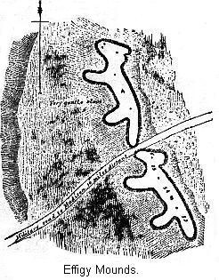
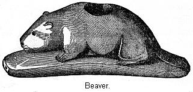
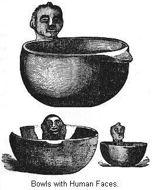

Meaning of "Mound Builders"—Location of Mound Building tribes—All Mounds not the work of men—Altar Mounds—Objects found on the Altars—Altar Mounds possibly burial Mounds—Burial Mounds—Mounds not the only Cemeteries of these tribes—Terraced Mounds —Cahokia Mound—Historical notice of a group of Mounds—The Etowah group—Signal Mounds—Effigy Mounds—How they represented different animals—Explanation of the Effigy Mounds—Effigy Mounds in other localities—Inclosures of the Scioto Valley—At Newark, Ohio—At Marietta, Ohio—Graded Ways—Fortified Inclosures—Ft. Ancient, Ohio—Inclosures of Northern Ohio—Works of unknown import—Ancient Canals in Missouri—Implements and Weapons of Stone—Their knowledge of Copper—Ancient mining —Ornamental pipes—Their knowledge of pottery—Of Agriculture—Government and Religion—Hard to distinguish them from the Indians.
PAST of our race is irradiated here and there by the light of science sufficiently to enable us to form quite vivid conceptions of vanished peoples. As the naturalist, from the inspection of a single bone, is enabled to determine the animal from which it was derived, though there be no longer a living representative, so the archæologist, by the aid of fragmentary remains, is able to tell us of manners and times now long since removed. In the words of another: "The scientist to-day passes up and down the valleys, and among the relics and bones of vanished people, and as he touches them with the magic wand of scientific induction, these ancient men stand upon their feet, revivified, rehabilitated, and proclaim with solemn voice the story of their nameless tribe or race, the contemporaneous animals, and physical appearance of the earth during those prehistoric ages."2
We have already learned that the world is full of mysteries, and though, by the exertion of scholars, we begin to have a clearer idea of some topics, yet our information is after all but vague and shadowy. The amount of positive knowledge in regard to the mysterious tribes of the older Stone Age, or the barbarians of the Neolithic period, or the struggling civilization of the early Metallic Ages, is lamentably deficient. On our Western Continent we have the mysterious remains in the gold-bearing gravels of the Pacific coast, the significance of which is yet in dispute. We have the Paleolithic Age of Europe, represented by the remains found in the gravels of the Delaware at Trenton, New Jersey. When deposited there, and by what people used, is, perhaps, still enshrouded in doubt.
Leaving now the past, expressed by geological terms, or by periods of thousands of years, we draw near to our own tribes, near, at least, comparatively speaking, and behold, here, also, we discern evidence that an ancient culture, as marked as that which built its cities along the fertile water-courses of the Old World, had its seat on the banks of our great rivers; that here flourished in full vigor for an unknown length of time a people whose origin and fate are yet in doubt, though, thanks to the combined efforts of many able men, we begin to have clearer ideas of their social organization. We know them only by reason of their remains, and as these principally are mounds, we call them the "Mound Builders."
The name is not a distinguishing one in every sense, since mankind, the world over, have been mound and pyramid builders. The pyramids of Egypt and the mound-dotted surface of Europe and Asia bear testimony to this saying, yet nowhere else in the world are they more plainly divided into classes, or marked with design than here. In some places fortified hills and eminences suggest the citadel of a tribe or people. Again, embankments of earth, mostly circular or square, separate and in combination, generally inclosing one or more mounds, excite our curiosity, but fail to satisfy it. Are these fading embankments the boundaries of sacred inclosures, or the fortification of a camp, or the foundations on which to build communal houses? Here graded ways, there parallel embankments raise questions, but suggest no positive answer. We are equally in doubt as to the purposes for which many of the mounds were built. Some seem to have been used as places of sepulcher, some for religious rites, and others as foundation site of buildings. Some may have been used as signal mounds, from which warning columns of smoke, or flaming fires, gave notice of an enemy's approach.
Before coming to details let us, at a glance, examine the picture as a whole. This country of ours, with its wide plains, its flowing rivers and great lakes, is said by scholars to have been the home of a people well advanced in the arts of barbarian life. What connection, if any, existed between them and the Indians, is yet unsettled. We are certain that many years before the Spanish discovery of America they made their settlements here, developed their religious ideas, and erected their singular monuments. That they were not unacquainted with war, is shown by their numerous fortified inclosures. They possessed the elements of agriculture, and we doubt not were happy and contented in their homes. We are certain they held possession of the fairer portions of this country for many years.
We must now seek to gather more particular knowledge of them, and of the remains of their industry. We must not forget that these are the antiquities of our own country; that the broken archæological fragments we pick up will, when put together, give us a knowledge of tribes that lived here when civilization was struggling into being in the East. It should be to us far more interesting than the history of the land of the Pharaohs, or of storied Greece. Yet, strange to say, the facts we have just mentioned are unknown to the mass of our people. Accustomed to regard this as the New World, they have turned their attention to Europe and the East when they would learn of prehistoric times. In a general way, we have regarded the Indians as a late arrival from Asia, and cared but little for their early history. It is only recently that we have become convinced of an extended, past in the history of this country, and it is only of late that able writers have brought to our attention the wonders of an ancient culture, and shown us the footprints of a vanished people.
We must first try and locate the territory occupied by the remains of the mound builders. They are not to be found broadcast over the whole country. We recall, in this connection, that the early civilization of the East arose in fertile river valleys. This is found to be everywhere the case, so we are not surprised to learn that the broad and fertile valley of the Mississippi, with its numerous tributaries, was the territory where these mysterious people reared their monuments and developed their barbarian culture. Throughout the greater portion of this area we find numerous evidences of a prolonged occupation of the country. We are amazed at the number and magnitude of the remains. Though this section has been under cultivation for many years, and the plow has been remorselessly driven over the ancient embankments, yet enough remain to excite our curiosity and to amply repay investigation.
This portion of the United States seems to have been the home, the seat of the mound building tribes. We can not expect to find one type of remains scattered over this entire section of country. Indeed, to judge from the difference of the remains, they must have been the work of different people or tribes, who were doubtless possessed of different degrees of culture.3 We will notice in our examination how these remains vary in different sections of the country. But it is noticeable that these remains become scarce and finally disappear as we go north, east, and west from the great valley. Although they are numerous in the Gulf States, yet they are not to be found, except in a few cases, in States bordering on the Atlantic.4 Some wandering bands, perhaps colonies from the main body of the people, established works on the Wateree River, in South Carolina,5 In the mountainous regions of North Carolina occur mines of mica, which article was much prized by the mound builders; and here also are to be found traces of their early presence.6 We do not know of any authentic remains in New England States. In Western New York there exists a class of remains which, though once supposed to be the work of these people, are now generally considered as the remains of works erected by the Indians,7 and of a similar origin appears to have been the singular fortification near Lake Winnipiseogee, in New Hampshire.8
We have no record of their presence north of the great lakes. Passing now to the western part of the valley, we do not find definite traces of their presence in Texas. On this point, however, some authors state the contrary, apparently basing their views on a class of mounds mentioned by Prof. Forshey.9 But the very description given of these mounds, and the statements as to the immense number of them,10 seem to show they are not the work of men.11 We do not think the West, and especially the North-west, has been carefully enough explored to state where they begin. It is certain that the head waters of the Mississippi and the Missouri were thickly settled with tribes of this people, and some writers think that they spread over the country by way of the Missouri Valley from the North-west. Mr. Bancroft quotes from the writings of Mr. Dean, to show the existence of mounds and inclosures on Vancouver Island, and in British Columbia. And the statement is made that a hundred miles north of Victoria there is a group of mounds ranging from five to fifty yards in circumference, and from a few feet to fifty feet in height.12
The inclosures, however, are described as being very similar to those in Western New York, and are probably simply fortified sites, common among rude people the world over, and such as were often erected by Indians. The remains on the upper Missouri and its tributaries are very numerous, and to judge from the brief description given us of them, they must be very interesting.13 This section has, however, been too little explored to speak with confidence of these works.
As showing how much care should be exercised
in this matter, we refer to the account given by Capt. Wilkes in
his journal of the United States exploring expedition. Speaking
of the mounds on the gravelly plains between the Columbia River
and Puget Sound, he tells us that the Butte Prairies are covered
with small mounds at regular distances asunder. Some of them are
thirty feet in diameter, six or seven feet above the level of the
ground, and many thousands in number. He opened some of them, and
found a pavement of round stones, and he thought he could detect
an arrangement of the mounds in groups of five, thus.
It was his impression that they were the works of men, and had been constructed successively and at intervals of several years.14 This observation of Capt. Wilkes is referred to by many as evidence of the former existence of Mound Builders in this section.
More careful research in recent times has established the fact that these mounds were certainly not erected by human hands, and no one else has been able to discover the supposed arrangement in groups of five. The pavement of round stones is common to the whole prairie.
But the greatest objection is the number of the mounds. A population larger than could have found a living in the country must have been required to erect them, unless we assume that a great length of time was consumed in this work. Some other explanation must be given for these mounds, as well as for those mysterious ones mentioned by Prof. Forshey. This cut gives us a fair idea of the scenery of this section and the mounds.15
Within the area we have thus defined are located the works of the people we call the Mound Builders. What we wish to do is to learn all about these vanished people. A great many scholars have written about them, and large collections of the remains of their handiwork have been made. There is, however, a great diversity of opinion respecting the Mound Builders and their culture. So we see we have a difficult subject to treat of. In order to gain a clear understanding of it, we must describe the remains more closely. About all we can learn of these people is from a study of their monuments. We can not call to our aid history or tradition, or rock-carved inscription, but must resort to crumbling mounds, broken down embankments; study their location, and observe their forms. To the studies in the field we must add those in the cabinet, and examine the many objects found in and above the mounds and earth-works, as well as the skeletons of the builders of the works. Rightly used, we can draw from these sources much valuable information of the people whose council-fires blazed all along the beautiful valleys of the Ohio and Mississippi rivers in times far removed from us.
We will first speak of the simplest form of these works, the ordinary conical mound. This is the one form found all over the extensive area designated. They exist in great numbers on the banks of the upper Missouri, as well as the river bottoms of the South. This cut represents a very fine specimen of a mound, in this instance surrounded by a circular embankment. We must not forget that mounds are found all over the world. "They are scattered over India, they dot the steppes of Siberia and the vast region north of the Black Sea; they line the shores of the Bosphorus and the Mediterranean; they are found in old Scandinavia, and are singularly numerous in the British Islands."16
The principle in human nature which leads to the erection of mounds is living and active to-day. The shaft which surmounts Bunker Hill is but a modern way of memorizing an event which in earlier ages would have led to the erection of a mound, and the polished monument which marks the resting place of some distinguished man was raised for the same purpose as the mounds heaped over the chiefs and warriors of another age. The feeling which moves us to crown with steeples or spires our houses of worship is evidently akin to that which induced older races to erect a mound on which to place their temples, their idols, and altars of sacrifice.
If mounds were the only works remaining of these ancient people, we would not take so great an interest in them, and, as it is, we are not to suppose that all the mounds are the works of those people we call the Mound Builders. Recent investigation and historical evidence unite in showing that some comparatively recent Indian tribes formed and used mound structures. Early explorers have left abundant testimony to show that in many cases the Indians resorted to mound-burial. Thus, it seems that it was the custom of the Iroquois every eighth or tenth year, or whenever about to abandon a locality, to gather together the bones of their dead and rear over them a mound. To this custom, which was not confined to the Iroquois, are doubtless to be ascribed the barrows and bone mounds which have been found in such numbers in various parts of the country.17 Although it is well to bear these facts in mind, yet it is not doubted that the larger number, and especially the more massive ones, were erected by the same people who built the other mysterious works, and so it is necessary that they be carefully studied.
In the valley of the Ohio there have been found a class of mounds known as Altar Mounds. These, it should be stated, nearly always occur in or near inclosures. This cut gives us a good idea of mounds of this kind. Near the top is seen an instance of what is called "intrusive" burial. After the mound was completed it had been dug into and a body buried near the surface. This burial was evidently later in time, and had no connection with the purpose for which the mound was originally built. We also notice in this mound the different layers of which it was composed. These layers are of gravel, earth, and sand, the latter being only a few inches thick. Mounds made in this manner are called stratified mounds, and all altar mounds are probably of this kind. The lines of stratification have been described as curving so as to correspond with the shape of the mound, and such we are told is the general rule.18
The peculiar feature, however, is the altar at the bottom of the mound, directly above the natural surface of the ground. The small cut gives us a clear idea of the altar, the light lines running around it showing the plan. These altars are almost always composed of clay, though some of stone have been discovered. They are of various shapes and sizes. We notice the dish-shaped depression on the top of the altar. The clay of which they are composed seems to have been moulded into shape directly over the surface of the ground. Sometimes a layer of sand was put down as a foundation. They are nearly always thoroughly burned, the clay being baked hard, sometimes to the depth of fifteen or twenty inches. This must have required intense and long continued heat.
We are at once curious to know the object of this altar. Within the basin-shaped depression are generally found all manner of remains. Sometimes portions of bones, or fragments of wood, arranged in regular order; pieces of pottery vessels, and implements of copper and stone; spear-heads, arrow-heads, and fragments of quartz and crystals of garnet. Pipes are a common find, carved in miniature figures of animals, birds, and reptiles. Two altar-mounds but recently examined near Cincinnati had altars about four feet square that were loaded down with ornaments.
One especially contained quantities of ornaments of stone, copper, mica, shells, the canine-teeth of bears and other animals, and thousands of pearls. They were nearly all perforated, as if for suspension. Several of the copper ornaments were covered with native silver which had been hammered out into thin sheets and folded over the copper. One small copper pendant seems to have been covered with a thin sheet of hammered gold, as a small piece was still clinging to it. This is the first example of finding native gold in the mounds.19 On this altar were also found masses of meteoric iron, and ornaments of the same material. One piece of mica showed the profile of a face.20
In all cases the articles found on the altars show the action of fire. We seem justified, then, in supposing that after the altar was formed, fires were lit on them, and into this fire were thrown the various articles just enumerated. But what was all this for? This will probably never be very clear to us, beyond the fact that it was a religious rite. Portions of the human skeleton have been found on these altars, and it has been suggested that human victims were at times part of the sacrifice; but as it is known that this people practised cremation, it may be that the altars were sometimes used for that purpose, the remains being afterwards gathered and buried elsewhere.
After the offerings had been flung into the fire, while it was yet glowing on the altar, earth or sand was heaped over them for a few inches, then successive layers of earth and sand, or ashes, clay, or gravel. Sometimes the altars were used several different times, in which case a layer of clay several inches thick was laid over the old altar. In one case three layers had been burned in before the final addition of earth and sand were heaped over it. These strange monuments of a by-gone people hint to us of mysterious rites. We wish we had more positive knowledge of the ceremonies they commemorated; but at present we must rest satisfied with conjecture.
The next class of mounds are known as burial mounds, some of which are stratified, and resemble the so-called altar mounds. A mound explored in Butler County, Ohio, had in the center a layer of clay an inch thick, which had been burned until it was red. Underneath this was another layer of clay, beneath which was found charcoal, burnt cloth, and charred bones. Mr. Foster thinks that in this mound the body was placed on a rude altar, fires were lit, and that while yet burning, clay was thrown over it all, and that then fires were built all over the mound, sufficient to burn the clay for an inch in thickness.21 We have also a description of a group of mounds explored near the Mississippi River, in which there were evident signs of cremation. At least in several mounds fires had been built close above the bodies. But in cremation other victims may have been burned to accompany the departed chiefs or warriors. In one mound evidence of such a custom was observed.
In another mound the center was found to be a mass of burned clay interspersed with calcined human bones. No less than ten or fifteen bodies had been burned here. "They must have worshiped some fierce ideal deity, and the ceremony must have been considered of great importance to have required so many victims." This may have been, however, nothing more than simple cremation.22
Pidgeon has described mounds in Minnesota, in many respects like the altar mounds. In one case he mentions there was an altar or pavement of stone on the original surface of the ground, a few feet above which was a layer of clay, showing the action of fierce and long-continued fires. We furthermore are told that cremation, especially of chiefs, was more or less common among the Village Indians of North America, that similar usage was observed among many of the tribes of Mexico, and that the Mayas, of Yucatan, burnt the bodies of their lords, and built temples over their remains. So it may be that the altar mounds are but varieties of funeral mounds, the remains of the bodies burned here being buried elsewhere.23
The nations that celebrated their mysteries around these mounds have long since departed; the altar fires long since burned low. We are not sure that we understand their purport, but we are certain they were regarded as of great importance, and we can readily imagine that when the fires were lit on the altars, gathering crowds stood round, and participated in the religious observance, throwing into the fire their most valued ornaments, in this manner paying their last respects to the departed chiefs and great men of their tribe.
The true burial mounds are very numerous, an comprise by far the larger number of mounds. They are to be found all over the Mound Builders' territory, and are about the only class of remains found in the prairie regions of the West. From the upper waters of the Missouri and the great lakes on the north to the Gulf States on the south, and from west of the Mississippi to the Alleghenies of the East, in all this vast region they are the prevailing class of remains, and occur by hundreds, and even thousands, along the valleys. The mounds themselves are often not very conspicuous; as a rule they are simply heaps of dirt raised above the surface and rounded over, and from two or three to fifteen or twenty feet high, although many are of much larger size. They are seldom found on the lower, or recent river terrace, but are common on the upper terrace, and are often built upon the high bluffs bordering the streams, where a wide stretch of country is exposed to view. Black-bird, an Omaha chief, who died about the year 1800, desired to be buried on a high bluff overlooking the Missouri, so that he might see the boats passing up and down the river. Perhaps from a similar superstitious wish the Mound Builders sometimes chose the sites of their burial mounds where they could watch over their country; or it may be that the monuments over the dead were placed in such conspicuous positions that they might be readily seen by the people.
The next cut represents an ordinary burial mound, which was explored by tunneling in from one side. We notice there are no different layers or stratifications in this case. In some cases, at least, the building of such a mound occupied several years. We can see where the dirt was thrown down in small quantities, averaging about a peck, as if from a basket. In one case grass had started to grow on the unfinished surface of the mound, to be covered up by fresh dirt.24
In the majority of cases the mounds contain the remains of but one individual, with various relics of a rude and barbarous people. Where but one body was buried, the usual mode of procedure seems to have been to first clear a space on the surface of the ground; the body was then placed in the center of this prepared place, and often a rude framework of timber was placed around it, sometimes a stone chamber was built up. Over this the mound was erected to the desired height. This description would apply to nearly all of the many thousands of burial mounds in the country.
In the cut a layer of charcoal is noticed near the top. Nearly all mounds show evidence of the existence of fire during some period of their construction. In some cases these fires were fierce and long continued, as if the object had been to cremate the body. It may have been a part of their religious belief that it was necessary to keep fires blazing on the mound for a short length of time to keep off evil spirits, or to comfort the soul of the departed. Such at any rate was the custom among some Indian tribes. We are told that among the Iroquois, a "fire was built upon the grave at night to enable the spirit to prepare its food."25
In some cases, many individuals were buried in the same mound. These may be communal burials, such as we have already referred to. Mounds of this kind have been examined near Nashville, Tennessee. One mound alone was the burial place of over two hundred persons. Pidgeon describes some triangular burial mounds in Minnesota, differing in shape only from the ordinary circular mounds that belong to this division. In general, burial mounds are not very high, yet there are exceptions to this rule.
This cut represents one of the largest of these mounds. It is situated at the junction of Grave Creek and the Ohio River, twelve miles below Wheeling, in West Virginia. It measures seventy feet in height, and its base is nearly one thousand feet in circumference. An excavation made from the top downward, and from one side of the base to the center, disclosed the fact that the mound contained two sepulchral chambers, one at the base and one near the center of the mound. These chambers had been constructed of logs, and covered with stone. The lower chamber contained two skeletons, one of which is supposed to have been a female. The upper chamber contained but one skeleton. In addition to these, there were found a great number of shell beads, ornaments of mica, and bracelets of copper.26
A moment's thought will show us what a great work such a mound must have been for a people destitute of metallic tools and domestic animals. The earth for its construction was probably scraped up from the surface and brought thither in baskets. A people capable of erecting such a monument as this, with only such scanty means at their command, must have possessed those qualities which would sooner or later have brought them civilization.
Another very interesting mound of this class once stood in the city of St. Louis. The rapidly growing city demanded its removal in 1869. It was an oblong mound, one hundred and fifty feet long by thirty in height. In its removal it was shown that it contained a burial chamber seventy-five feet long, from eight to twelve feet wide, and from eight to ten feet high, in which about thirty burials had taken place. The surface of the ground had first been leveled, then the walls raised to the desired height, made firm and solid, and plastered with clay. Timbers formed the roof, over which the mound had been raised to the desired height.
In process of time the roof decayed and fell in, thus giving a sunken appearance to the top of the mound. This view is a cross section of the mound as it was revealed by the workmen. We notice where the roof has fallen in, and the outline of the interior chamber. This burial chamber was perhaps an exact model of the cabins in which the people lived. Can it be that this mound was the final resting place of some renowned chief, and that the other bodies were those of his attendants sent to accompany him to the other world? This is perhaps as reasonable a conjecture as any. Certain it is that this tumulus and that at Grave Creek were fit pyramids for the Pharaohs of the New World.
It is not to be supposed that the mounds were the sole cemeteries of the people who built them. Like the barrows of Europe, they were probably erected only over the bodies of the chiefs and priests, the wise men, and warriors of the tribe. The amount of work required for the erection of a mound was too great to provide one for every person. The greater number of the dead were deposited elsewhere than in mounds, but it is doubtful whether we can always distinguish the prehistoric burial places from those of the later Indians. An ancient cemetery, discovered near Madisonville, Ohio, proved to be a most interesting find, as it was thought to be a burial place of the Mound Builders,27 but it seems there is strong doubt on this point. One writer thinks this was a cemetery of the Erie tribe of Indians, and not very ancient in date.28
In Tennessee are to be found numerous burial places known as the stone-grave cemeteries. Stone graves of a similar character are found in Kentucky, Ohio, and Missouri. These are as yet but few facts which can be used as indicating that all the stone graves are of one people. Many of these cemeteries are of great antiquity, while similar stone graves are of quite recent date. In some places the cemeteries cover very large areas.
We have now to describe a class of mounds that are always regarded with great interest, as a number of our scholars think they see in them the connecting link between the remains in this country and those of Mexico and the South. These are generally known as "temple mounds," from the common impression that they were sites of temples or public buildings. In general terms, mounds of this class are distinguished by their large size and regularity of form, and they always have a flat or level top. On one side there is generally a graded way leading up to the summit, in some instances several such methods of approach. Sometimes the sides of the mound are terraced off into separate stages.29
We have already noticed that different sections of country are distinguished by different classes of mound remains. In the present State of Ohio are found many altar mounds and inclosures. In the West are large numbers of burial mounds, but the so-called temple mounds are most numerous in the South. At one place in Wisconsin is found a low embankment inclosing four low mounds with leveled tops. But the resemblance between these and the regular temple mounds is certainly slight. Only a few instances of these flat-topped mounds are found in Ohio. Of these the still existing "elevated squares" at Marietta are good examples.
 This cut represents the mound preserved in the park at Marietta.
It is ten feet high, one hundred and eighty-eight feet long, by
one hundred and thirty-two feet wide. The platform on the top has
an area of about half an acre. Graded ways lead up on each of the
four sides. These grades are twenty-five feet wide, and sixty
feet long.30
This cut represents the mound preserved in the park at Marietta.
It is ten feet high, one hundred and eighty-eight feet long, by
one hundred and thirty-two feet wide. The platform on the top has
an area of about half an acre. Graded ways lead up on each of the
four sides. These grades are twenty-five feet wide, and sixty
feet long.30
As we approach the Gulf States, these platform mounds increase in number. The best representative of this class, the most stupendous example of mound builders' work in this country, is situated in Illinois, not far from St. Louis. The mound and its surroundings are so interesting that they deserve special mention. One of the most fertile sections of Illinois is that extending along the Mississippi from the Kaskaskia to the Cahokia river, about eighty miles in length, and five in breadth. Well watered, and not often overflowed by the Mississippi, it is such a fertile and valuable tract that it has received the name of the "Great American Bottom." It is well known that the Mound Builders chose the most fertile spots for their settlements, and it is therefore not surprising to find the evidence that this was a thickly settled portion of their territory. Mr. Breckenridge, writing in 1811, says: "The great number of mounds, and the astonishing quantity of human bones, everywhere dug up or found on the surface of the ground, with a thousand other appearances, announces that this valley was at one time filled with habitations and villages. The whole face of the bluff, or hill, which bounds it on the east, appears to have been a continuous burying ground."31
Mounds are numerous in this section. We learn that there are two groups of mounds or pyramids, one about ten miles above the Cahokia, and the other about the same distance below it, more than one hundred and fifty in all. Speaking of the group above the Cahokia, Mr. Breckenridge says: "I found myself in the midst of a group of mounds mostly of a circular shape, and, at a distance, resembling enormous hay-stacks scattered through a meadow. One of the largest which I ascended was about two hundred paces in circumference at the bottom, the form nearly square, though it had evidently undergone considerable alteration from the washing of rains. The top was level, with an area sufficient to contain several hundred men." He represents the view from the top of the mound to be a very extensive and beautiful one. From this elevation he counted forty-five mounds or pyramids, besides a great number of small artificial elevations. This group was arranged in the form of a semicircle, about a mile in extent, the open space being on the river.

Three miles above occurs the group in which is found the famous big mound.32 This cut gives us a good idea of the mound as it was in its perfect state. All accounts given of this mound vary. From a cut of the model, as prepared by Dr. Patrick, the area of the base is a trifle over fifteen acres.33 The ascent was probably on the south side of the mound, where the little projection is seen. The first platform is reached at the height of about fifty feet. This platform has an area of not far from two and four-fifth acres. Large enough for quite a number of houses, if such was the purpose for which this mound was erected. The second platform is reached at about the height of seventy-five feet, and contains about one and three-fourth acres. The third platform is elevated ninety-six or ninety-seven feet, while the last one is not far from one hundred feet above the plain. The area of the last two is about three-fourths of an acre each. The areas of all the platforms are not far from six acres. We require to dwell on these facts a moment before we realize what a stupendous piece of work this is. The base is larger than that of the Great Pyramid,34 and we must not lose sight of the fact that the earth for its construction was scraped up and brought thither without the aid of metallic tools or beasts of burden, and yet the earth was obtained somewhere and piled up over an area of fifteen acres in one place to a height of one hundred feet, and even the lowest platform is fifty feet above the plain. Some have suggested that it might be partly a natural elevation. There seems to be, however, no good reason for such suggestions.
What motive induced the people to expend so much labor on this mound? It is not probable that this was a burial mound, though it may ultimately prove to be so. The most probable supposition is that the mound was erected so as to secure an elevated site, perhaps for purpose of defense, as on these platforms there was abundant room for a large village, and an elevation or height has always been an important factor in defenses. In this connection, Prof. Putnam has called our attention to a fact which indicates that a very long time was occupied in the construction of the mound, and further, that a numerous population had utilized its platforms as house sites—that is, that "everywhere in the gullies, and over the broken surface of the mounds, mixed with the earth of which it is composed, are quantities of broken vessels of clay, flint chips, arrow-heads, charcoal, bones of animals, etc., apparently the refuse of a numerous people." The majority of writers, however, think that this elevated site, obtained as the result of so much labor, was utilized for important public buildings, presumedly the temple of their gods, and no one can help noticing the similarity between this structure and those raised by the ancient Mexicans for both religious purposes and town sites.
Mr. Foster thinks that "upon this platform was reared a capacious temple, within whose walls the high-priests gathered from different quarters at stated seasons, celebrated their mystic rites, while the swarming multitudes below looked up with mute adoration."35 Mr. Breckenridge, whose writings we have already referred to, at the time of his first visit, "everywhere observed a great number of small elevations of earth, to the height of a few feet, at regular distances apart, which appeared to observe some order: near them pieces of flint and fragments of earthen vessels." From this he concludes that here was a populous town, and that this mound was a temple site. It is doubtful whether we shall ever pierce the veil that lies between us and this aboriginal structure. The pyramids of the Old World have yielded up their secret, and we behold in them the tombs of Egypt's kings. But this earthen pyramid on the western prairie is more involved in mystery, and we do not know even its builders. If the result of religious zeal, we may be sure that a religion which exacted from its votaries the erection of such a stupendous piece of work was one of great power.
As before remarked, "temple mounds" increase in numbers and importance as we go south. In Kentucky they are more frequent than in the States north of the Ohio River, and in Tennessee and Mississippi they are still more abundant.36 We also learn that they are often surrounded, or nearly so, with moats or ditches, as if to fortify their location. Our next cut illustrates such an arrangement—a circular wall of earth four feet high and two thousand three hundred feet in circumference, incloses four mounds, two of which are temple mounds. According to the late Prof. Forshey, temple mounds abound in Louisiana. He described a group situated in Catahoola County, in which the principal mound has a base of more than an acre, a height of forty-two feet, and the upper platform an area of nearly one-third of an acre. The smaller mounds are arranged around this larger one. This group is defended by an embankment. From this point for a distance of twenty miles along the river, are scattered similar groups of mounds; in all cases the smaller ones arranged around the larger one, which is presumably the site of a temple.
A digression right here may not be devoid of interest. We are not sure but that the dim, uncertain light of history falls on the origin of this group of mounds. When the French first commenced their settlement in the lower Mississippi Valley, the Natchez Indians was the most powerful tribe in all that section. In the course of time, wars ensued between them and the French, and in the year 1730 they fled into Upper Louisiana, and settled at the place where these mounds are now found. But the French followed them a year or so afterwards, and nearly exterminated. them. Some of our scholars think that they erected these mounds.37 The historian of that epoch simply says they had "built a fort there." It is however questioned whether they had time to build works of such magnitude. But they were both a mound-building and a mound-using people, and we are not prepared to say how long it would take them to do the work, until we know the number engaged, methods employed, and other considerations.38 If they did not build these works, they doubtless cleared them of trees and utilized them; and this place was therefore the scene of the final downfall of the Natchez—a people we have every reason to regard as intimately connected with the prehistoric mound-building tribes.
The largest temple mound in the South is near Seltzertown, Mississippi. Its base covers about six acres, and it rises forty feet. This slope was ascended by means of a graded way. The summit platform has an extent of nearly four acres. On this platform three other mounds had been reared—one at each end, and a third in the center. Recent investigation by the Bureau of Ethnology have shown that the base of this mound is a natural formation. Lumps of sun-dried, or partially burnt clay, used as plastering on the houses of the Mound Builders, gave rise to a sensational account of a wall of sun-dried bricks two feet thick, supporting the mound on the northern side.39 The famous Messier Mound, in Georgia, is said to reach a height of ninety-five feet. But a large part of this elevation is a natural eminence; the artificial part is only a little over fifty feet.
A work of unusual interest occurs on the Etowah River, Georgia. This cut gives us a plan of the work. We notice, first of all, the moat or ditch by which they fortified their position. The ditch is still from five to twenty-five feet deep, and from twenty to seventy-five feet wide. It connects directly with the river at one end, but stops short at the other. It surrounds nearly fifty acres of land. At two points we notice reservoirs, each about an acre in size, and an average depth of not less than twenty feet. At its upper end is an artificial pond. This ditch, with its reservoirs and pond, is no slight work. The large mound seen in the center of the space is one of the largest of the temple mounds. Its shape is sufficiently shown in the cut. The height of the mound is sixty-five feet. We call especial attention to the series of terraces leading up the south side of the mound. Graded ways afford means of access from one terrace to the other. A pathway is also seen on the eastern side.
To this group of works an interest attaches similar to that of the group of works mentioned in Louisiana. We are not certain but that we catch a glimpse of it while it was yet an inhabited Indian town. This is contained in the brief accounts we have of the wanderings of the unfortunate De Soto and his command. One of the chroniclers of this expedition La Vega, describes one of the towns where the weary Spaniards rested, and which we are sure was somewhere in Northern Georgia, in such terms, mentioning the graded way leading to the top, that Prof. Thomas, who has spent some time in this investigation, thinks his description can apply only to the mound under consideration.40 Whether this conclusion will be allowed to stand, remains to be seen. But, if true, then the darkness which rests upon this aboriginal structure lifts for a moment and we see around it a populous Indian town, able to send five hundred warriors to battle. The Spaniards marched on to sufferings and death, and darkness again closed around the Etowah Mound. When the Europeans next beheld it around it was the silent wilderness; the warriors had departed; the trees of the forest overspread it.
We have now described the principal mound structures, and shown the different classes into which they are divided. But a large class of mounds are found scattered all through the Mound Builders' territory that were probably used as signal mounds. Burial mounds were also often used for this purpose.41 This was because their location was always very favorable for signal purposes. Signaling by fire is a very ancient custom. The Indians on our western plains convey intelligence by this means at the present day. Some tribes use such materials as will cause different shades of smoke, using dried grass for the lightest, pine leaves for the darkest, and a mixture for intermediate purposes. They also vary the signal by letting the smoke rise in an unbroken column, or cover the fire with a blanket, so as to cause puffs of smoke. The evidence gathered from the position of the mounds, and traces of fire on their summit, is that the Mound Builders had a very extensive system of signal mounds.
To illustrate this system, we would state that the city of Newark, Ohio, was the site of a very extensive settlement of the Mound Builders. This settlement was in a valley, but on all the surrounding hills were located signal mounds. And it is further stated that lines of signal mounds can be traced from here as a center to other and more distant points. The large mound at Mt. Vernon, twenty miles to the north, was part of this system. As the settlements of the Mound Builders were mostly in river valleys, we would expect to find all along on the bluffs fronting these valleys traces of signal mounds. In the Scioto Valley, from Columbus to Chillicothe, a distance of about forty miles, twenty mounds "may be selected, so placed in respect to each other that it is believed, if the country was cleared of forests, signals of fire might be transmitted in a few minutes along the whole line." Some think the chain is much more extensive than this, and that the whole Scioto Valley, from Delaware County to Portsmouth, was so provided with mounds that signals could be sent in a very few minutes the whole distance.42
The valley of the Miami River was equally well provided with signal mounds. This great mound, at Miamisburg, Ohio, rising to the height of sixty-eight feet, was one of the chain by which signals were transmitted along the valley. Not only was each river valley thus provided, but there is evidence that communication was established between different river systems, so we can easily see how quickly the invasion of their country by an enemy from any quarter would become known in widely scattered sections. Immediately across the river from Chillicothe, Ohio, on a hill nearly six hundred feet high, was located a signal mound. A fire built upon it would be visible twenty miles up the valley, and an equal distance down. It would be also visible far down the valley of Paint Creek. Some think that such a system of lofty observatories extended across the whole State of Ohio, of Indiana, and Illinois, the Grave Creek mound, on the east, the great mound at Cahokia, on the west, and the works in Ohio filling up the line. We do not believe, however, it is safe to draw such conclusions. It is doubtful whether there was any very close connection between the tribes in these several sections.
In the State of Wisconsin are found some of the most interesting remains of the Mound Builders. They are so different from the ordinary remains found elsewhere that we must admit that the people who built them differed greatly from the tribes who built the great temple mounds of the South, or the earthworks of Ohio. The remains in Wisconsin are distinguished not by their great size or height, but by their singular forms. Here the mound building instincts of the people were expressed by heaping up the earth in the shape of animals. What strange fancy it was that led them to mould the figures on the bluffy banks of the rivers and the high lands about the lakes of their country, we shall perhaps never know. That they had some design in this matter is, of course, evident, and if we would try and learn their secret, we must address ourselves to a study of the remains.
 Effigy mounds are almost exclusively confined to the State of Wisconsin. We, indeed, find effigy mounds in other sections, but they are of rare occurrence.43 They, however, show that the same reasons, religious, or otherwise, exists in other localities, while in the area covered by the southern portion of the State of Wisconsin it found its greatest expression. This cut affords us a fair idea of effigy mounds. Here are seen two animals, one behind the other. On paper we can readily see the resemblance. Stretched out on the ground, and of gigantic proportions, the resemblance is not so marked, and some might fail to notice it at first sight. Either of those figures is over one hundred feet long, and about fifteen feet wide. With few exceptions, effigy mounds are inconsiderable in height, varying from one to four feet. These mounds have been carefully studied of late years, and there is no doubt that in many instances we can distinguish the animals represented.
We learn, then, that tribes formerly living in Wisconsin had the custom of heaping up the earth in the shape of the various animals peculiar to that section. But no effigies are found of animals that have since become extinct, or of animals that are to be found only in other lands.
Our next cut represents the famous elephant mound of Wisconsin, on the strength of which a number of fair theories have been given relating to the knowledge of the mastodon by the builders of the mound, and its consequent antiquity. It now bears some resemblance to an elephant, but we learn that the trunk was probably produced by the washing of the banks and, from the same cause, a projection above the head, supposed to represent horns, has disappeared. Taking these facts into consideration, it is quite as likely that it represented a buffalo.44 One writer even thinks he found a representation of a camel, but the fact is, the more these effigy mounds are studied, the more certain are we that they are representations of animals formerly common in that region.
The manner in which they represented the various animals is full of interest to us. It has been discovered that they worked on a system. The last cut represents a group of three animals discovered a few miles from the Blue Mounds in Dane County. We notice at once a difference between the central animal, with a tail, and the other two. It will also be observed that the animals are represented in profile, with only two projections for legs. They are never separated so that we can distinguish the two front and the two hind feet. Animals so figured are the bear, fox, wolf, panther, and others. Grazing animals, such as the buffalo, elk, and deer, are represented with a projection for horns. In the last cut the other two animals are buffaloes. In various ways the particular kind of animal can nearly always be distinguished.45
The preceding cut represents two elks grazing, and a fox in the distance. The long embankments of earth at one side are considered by Mr. Peet as in the nature of game drives. But we call attention to the expressiveness with which these figures are delineated. What could be more natural than the quietly grazing elks, with the suspicious prowling fox in the distance. In the cut we also see two cross-shaped figures. This was their method of representing birds, a projection on each side of a central body denoting wings. These figures are often very expressive.
In this cut we have no difficulty in recognizing an eagle. It is represented as soaring high in the air. On the bluffs above it is a wolf effigy, and several conical and long mounds. In the cut preceding this the eagle and the hawk are hovering over the feeding elks, while in this cut a flock of hawks are watching some buffaloes feeding in the distance. This group of effigies was found on the banks of the Kickapoo River.
Our next cut represents a wild goose with a long neck and beak followed by a duck with a short neck, flying towards the lake.
Water-loving animals, such as salamanders and turtles, are represented in still another way, two projections on each side of a central figure. The next following cut represents a turtle. The tail was not always added. The salamander closely resembles the turtle, but notice the difference in the body, and still different is the cut of the musk-rat (see later). Fishes are figured as a straight embankment of earth tapering to a point.
The same system that was observed in the location of signal mounds is to be noticed in the arrangements of these groups of effigy mounds. They are not alone. One group answers to another on a distant hill, or is in plain view of another group in the valley below. Distant groups were so related, each commanding a wide extent of country, and thus group answers to group, and mound to mound, for miles away, making a complete system throughout the region.
We notice this as to the location of the mounds. When we examine the mounds themselves we observe no little skill in the way they represent the animals. They often impressed on them something more than mere animal resemblances. "There are groups where the attitudes are expressive of a varied action. Certain animals, like the weasel or mink, being seen with a bird so near that, apparently, it might be caught by a single spring; and still others, like the wolf or wild-cat, are arranged head to head, as if prepared for combat; and still others, like the squirrel or coon, are in the more playful attitudes, sometimes apparently chasing one another over hill or valley; and again situated alone, as if they had just leaped from some tree, or drawn themselves out of some den or hole."46
Nor is the effigy of the human form wanting. It is found in several localities throughout the State. This cut shows us one such effigy. This was the beginning of a long train of animal mounds, presumably representing bears, found near the Blue Mounds, Wisconsin.47 We can not observe that any more importance was ascribed to the effigy of a human being than to that of an animal.
In casting about for suitable explanation for the erection of these animal mounds, we find ourselves lost in conjecture as to the motive which induced these people to prepare these earthen effigies. We may be sure that it was for some other reason than for amusement, or to give exercise to an artistic feeling. Only in very few instances do we detect any arrangements which would imply that they were in the nature of defenses. In some cases the effigies are so arranged as to form a sort of inclosure, some portion of the figure being prolonged to an unusual extent and thus inclosing a space that may have been utilized for a village site. This group on the Wisconsin River illustrates this point. Here the area thus partially inclosed, is about an acre. It is a singular fact that these inclosures are almost always triangular in shape.48 But it is manifest that a simple earth wall would serve for defense much better than these forms. They probably were not burial mounds, as few contain human remains, and it is not yet certain that these remains were not intrusive burials.49 It seems, therefore that they must have been in some manner connected with the religious life of the people.

If we examine the various groups scattered throughout the State, this belief is strengthened. It is found, for instance, in nearly every group, that some one effigy is the principal one, and is placed in a commanding position, about which the other forms are arranged. It is also thought that the same effigy is the principal or ruling effigy over a wide district. In illustration of this, it can be stated that in the south-eastern part of the State the turtle is always the ruling effigy. In any group of effigies it is the principal one. It seems to watch over and protect the others. In subordination to it are such forms as the lizard, hawk, and pigeon. Passing to the North, the turtle is no longer the important figure. It is replaced by the wolf, or wild-cat. This is now the principal form, and if the turtle is sometimes present, it is of less importance.
So marked is the fact we have just stated that Mr. Peet says, "that sometimes this division assumes almost the character of a river system, and thus we might trace what seems to be the beginning in this country of that which prevailed on classic soil and in Oriental regions—namely, river gods and tutelar divinities of certain regions, each tribal divinity having its own province, over which it ruled and on which it left its own form or figure as the seal of its power and the emblem of its worship."50
Looking for some explanation of this, we may find a key in the known customs of various Indian tribes, and the lower races of men. It is known that a tribe of Indians is divided into smaller bands, which are called gens or clans. A gens may consist of several hundred persons, but it is the unit of organization. It takes the place of a family among civilized people. These various bands are generally named after some animal. In the beginning these names may have been of no special significance, but in course of time each band would come to regard themselves as descendants of the animal whose name they bore. Hence the animal itself would be considered sacred in their eyes, and its life would seldom be taken by members of that gens.
The animal thus honored by the gens was, in the Indian dialect, the totem of the clan. This organization and custom we find running all through the Indian tribes. In many tribes the Indians were wont to carve a figure of their totem on a piece of slate, or even to carve a stone in the shape of the totem, which carved or sculptured stone they wore as an ornament, or carried as a charm to ward off evil and bring them good luck.51 We need only suppose that this system was very fully developed among the Mound Builders of Wisconsin, to see what important bearing it has on these effigy mounds.
A tribe located on one of the fertile river valleys of Wisconsin was composed of various gens or clans. On some common point in proximity to their villages, or some spot which commanded a wide view of the surrounding country, each gens would rear an effigy of its totem, the animal sacred to them. In every tribe some gens would be the most powerful, or for some cause the most respected, and its totem would be given in the largest effigy, and would be placed in the most commanding position. In a different locality some other tribe would be located, and some other totem would be regarded as of the most importance.
In this light effigy-mounds are not mere representatives of animal forms. They are picture-writings on a gigantic scale, and are the source of much true history. They tell us of different tribes, the clans which composed them, the religious beliefs, and the ruling gens of the tribe. Contemplating them, we seem to live again in the far-off past. The white man disappears; waving forests claim their ancient domain, and the rivers, with a more powerful current, roll in their olden channels. The animals whose forms are imaged here, go trooping through the forest or over the fertile bottom lands. The busy scenes of civilization give place to the placid quiet of primeval times, and we seem to see peaceful tribes of Mound Builders paying a rude veneration to their effigy-gods, where now are churches of a more soul-satisfying religion.
But there is still another point to be learned from an examination of these ancient mounds. Not only are they totems of the tribes, but they were looked on in some sense as being guardian divinities, with power to protect the homes of the tribe. This is learned by studying the location in which they are placed. They occupy all points of observation. In other parts of the Mound Builders' country, wherever we find signal-mounds we find corresponding positions in Wisconsin occupied by groups of effigy-mounds, or if one only is present, it is always the one which, from the considerations we have stated, was regarded as the ruling effigy of that section. It is as if their builders placed them as sentinels to guard the approaches to their homes, to give warning of the arrival of hostile bands. This is further borne out by finding that mounds placed in such positions frequently show evidence of the action of intense fire, and so we conclude they were used as signal stations also. So we need not doubt but that the region thus watched over by these effigy-mounds, group answering to group along the river banks, or in the valleys below, was at times lit up by the signal fires at night; or the warning column of smoke by day betokening the presence of dancer.52
Before leaving the subject of effigy-mounds, we must refer to some instances of their presence in other localities. This cut is an eagle effigy discovered in Georgia. Only one other instance, also occurring in Georgia, is known of effigy-mounds in the South. Measured from tip to tip of the wings, the bird, in this case, is one hundred and thirty-two feet. This structure is composed of stones, and a singular feature is the surrounding circle of stone.53
Several examples of effigy-mounds are found in Ohio. The most notable one is that known as the Great Serpent Mound, in Adanis County. We give an illustration of it. The entire surrounding country is hilly. The effigy itself is situated on a tongue of land formed by the junction of a ravine with the main branch of Brush Creek, and rising to a height of about one hundred feet above the creek. Its form is irregular on its surface, being crescent-shaped, with the point resting to the north-west. We give in a note some of the dimensions. The figure we give of this important effigy is different from any heretofore presented. We are indebted for the plan from which the drawing was made to Rev. J. P. MacLean, of Hamilton, Ohio. Mr. MacLean is a well-known writer on these topics. During the Summer of 1884, while in the employ of the Bureau of Ethnology, he visited the place, taking with him a thoroughly competent surveyor, and made a very careful plan of the work for the Bureau. All the other figures published represent the oval as the end of the works. Prof. Putnam, who visited the locality in 1883, noticed, between the oval figure and the edge of the ledge, a slightly raised, circular ridge of earth, from either side of which a curved ridge extended towards the sides of the oval figure. Mr. MacLean's researches and measurements have shown that the ridges last spoken of are but part of what is either a distinct figure or a very important portion of the original figure. As figured, it certainly bears a very close resemblance to a frog, and such Mr. MacLean concludes it to be.
There is both a similarity and a difference between this work and those of Wisconsin. The fact that it occurs isolated, the other effigies in Ohio being many miles away, shows that some special purpose must have been subserved by it. There the great numbers gave us a hint as to their purpose. In this case, however, nearly all observers conclude that it was a religious work. Mr. MacLean, after describing these three figures, propounds this query: "Does the frog represent the creative, the egg the passive, and the serpent the destructive power of nature?" Not a few writers, though not acquainted with the presence of the frog-shaped figure, have been struck with the combination of the egg and the serpent, that plays such an important part in the mythology of the Old World. We are told that the serpent, separate or in combination with the circle, egg, or globe, has been a predominant symbol among many primitive nations. "It prevailed in Egypt, Greece, and Assyria, and entered widely into the superstitions of the Celts, the Hindoos, and the Chinese." "Wherever native religions have had their scope, this symbol is sure to appear."54
Even the Indians have made use of this symbol. On Big Medicine Butte, in Dakota Territory, near Pierre, is a train of stones arranged in the form of a serpent, which is probably the work of the Sioux Indians. Around about on the hill is the burying-ground of their chiefs. This was to them sacred ground, and no whites were allowed near. The stones are about the size of a man's head, and are laid in two rows, from one to six feet apart. The length in all is three hundred and fifty feet, and at the tail, stones, to represent rattles, are rudely carved. The eyes are formed by two big red bowlders. No grass was allowed to grow between the two rows of stone.55
It seems reasonable to suppose that the few isolated effigy mounds we have outside of Wisconsin were built to subserve a different purpose than those in that State. Mr. Peet has made some remarks on their probable use that seem to us to cover the ground, and to do away with any necessity of supposing on the part of its builders an acquaintance with Old World mythologies. Nature worship is one of the earliest forms of worship. The prominent features of a landscape would be regarded as objects of worship. Thus, for example, the island of Mackinac resembles in its outline the shape of a turtle; so the island was regarded as sacred to the turtle, and offerings were made to it. A bluff on the same island at a distance resembles a rabbit; accordingly, it was called by that name, and offerings were made to it. It is quite natural that the effigy-mound builders should seek to perpetuate by effigy some of these early traditions.
In the case of the Big Serpent mound this point is worth considering. The ridge on which it stands is not only in the midst of a wild, rough region, but is so situated that it commands a wide extent of country. In shape this tongue of land is also peculiar. It is a narrow, projecting headland, and would easily suggest the idea of a serpent or a lizard. "This, with the inaccessibility of the spot, would produce a peculiar feeling of awe, as if it were a great Manitou which resided there; and so a sentiment of wonder and worship would gather around the locality. This would naturally give rise to a tradition, or would lead the people to revive some familiar tradition and localize it."56 The final step would be to make an effigy.
It seems to us very hazardous to draw any conclusions as to the religious beliefs of the Mound Builders from this effigy, or combinations of effigies. It also seems to us reasonable to suppose that but one figure was intended to be represented. A very slight prolongation of the serpent's jaws and the limbs of the frog would connect them, in which case we would have some amphibious creature with an unduly extended tail, or perhaps a lizard. We must remember that the whole figure has been plowed over once or twice, so that we are not sure of the original outlines. We can not tell why they should represent a portion of the body as hollow, but neither can we tell why the head of the supposed serpent should be represented as hollow. We do not find any important earth-works near here. The hill on which it is placed commands a very extensive view of the surrounding country. Within the oval a pile of stones showed evidence of a long-continued fire, which would indicate that this was also a signal-mound. Prof. Putnam thinks it probable that there was a burial place between it and the large conical mound not far away.57
In the vicinity of Newark, Ohio, are two examples of effigy mounds. This cut represents what is called the alligator mound, but it is probably the effigy of a lizard. The position which this mound occupies is significant. It is on the very brow of a hill about two hundred feet high, which projects out into a beautiful valley. The valley is not very wide. Directly across was a fortified camp, in the valley below it was a circular work, and a short distance below on another projecting headland was a strongly fortified hill. The great works at Newark were six miles down the valley, but were probably in plain view. That it was perhaps a signal station, is shown by the presence of traces of fire.
The length of this effigy is two hundred and five feet, the breadth of the body at its widest part, twenty feet, average height about four feet.58 The effigy mounds of Wisconsin, and the other few examples mentioned, are among the most interesting objects of aboriginal work. Except in a few favored instances, they are rapidly disappearing. To the leveling influence of time is added the assistance of man, and our knowledge of them will soon be confined to existing descriptions, unless something is at once done to preserve them from destruction. Interesting mementos of a vanished race, we turn from their contemplation with a sigh of regret that, in spite of our efforts, they are still so enwrapped in doubt.
Mounds and effigies by no means complete the description of Mound Builders' remains. One of the most interesting and mysterious class of works is now to be described. Early travelers in Ohio came here and there upon embankments, which were found to inclose tracts of land of various sizes. It was noticed that the embankments were often of the form of perfect circles, or squares, or sometimes octagons, and very often combinations of these figures. It was further evident that the builders sought level, fertile lands, along the various river courses. They very seldom built them on undulating or broken ground. Often have the very places where civilized man has laid the foundation of his towns proved to be the sites of these ancient works of the Mound Builders, and thus it has happened that many of the most interesting works of antiquity have been ruthlessly removed to make way for the crowded streets and busy marts of our own times.
The larger number of inclosures are circular, often of a small size. Where they occur separately they either have no gateway, or but one. Sometimes the circles are of very large size, surrounding many acres. Sometimes, though not very often, a ditch was also dug inside the embankment. This last circumstance is by many regarded as a strong proof that the primary object of these circles was not for defense.59 But an inclosure of this kind, even with the ditch on the inside, if surmounted by a row of pickets or palisades, would prove a strong position against Indian foes armed with bow and arrow. The Mandans constructed defenses of this kind around their villages.60 As to the original height of the walls, in the majority of cases it was not very great, generally from three to seven feet.
It is estimated that in Ohio alone there are fifteen hundred inclosures, but a large number of them have nothing especially worthy of mention. Some, however, are on such a large scale that they call from all more than a passing glance. In contemplating them, we feel ourselves confronted by a mystery that we can not explain. The ruins of the old world excite in us the liveliest feeling of interest, but we know their object, their builders, and their probable antiquity. The mazy ruins at Newark, and other places in Ohio, also fill the mind with astonishment, but in this case we are not certain of their antiquity, their builders are unknown, and we can not conjecture with any degree of certainty as to their use. Before so many uncertainties imagination runs riot, and we are inclined to picture to ourselves a scene of barbaric power and magnificence.
One beautiful specimen of this work is found in this cut. It occurs on the right bank of the Scioto river, five miles below Chillicothe. Here we notice a combination of the octagon and the circle. The areas of each are marked. The octagon is nine hundred and fifty feet in diameter, and nearly regular in shape. In 1846 its walls were eleven or twelve feet high, by about fifty feet base. It will be noticed that there is a gate at or near each angle of the octagon except one, and in front of that angle was a pit, from which some of the earth to form the walls was taken. Facing each gateway a mound was placed, as if to guard the entrance.
The circle connected with the octagon is perfect in shape, and is ten hundred and fifty feet in diameter. Its walls were only about half the height of the octagon. We notice some other small circular works in connection with the main work. In this case the parallels are not very regular, and seem to be connected with one or more circular works. In a work situated but a few miles from the one here portrayed, the parallels extend in one direction nearly half a mile, only one hundred and fifty feet apart. They terminate on the edge of a terrace. The object of such parallels is as yet unknown. In some cases, after extending some distance, they simply inclosed a mound.
It is easy enough to describe this work and give its dimensions, but who will tell us the object its builders had in mind? The walls themselves would afford but slight protection and if they were for defense, must have been surmounted with palisades. Works that were undoubtedly in the nature of fortified camps, are found in this same section, and one of the strongest was located not more than twelve miles away; but such defensive works differ very greatly in design from regular structures such as we are now describing. A very eminent scholar, Mr. Morgan, has advanced the theory that the walls were the foundations on which communal houses, like the Pueblos of the West, were erected.61 But this is mere theory. All traces of such habitations (if they ever existed) are gone, the usual debris which would be sure to accumulate around house-sites, is wanting, and the walls themselves seem unfit for such purpose.62
They may have been embankments surrounding towns and cultivated fields, but little has yet been found which can be cited as proofs of residence within the area so inclosed. We should not be surprised, however, if such would ultimately prove to be the case, since we now know that the Mound Builders of Tennessee did fortify their villages by means of embankments and ditches.63 A number of writers think that these regular inclosures were in some way connected with the superstitions of the people. In other words, that they were religious in character. Mr. Squier remarks, "We have reason to believe that the religious system of the Mound Builders, like that of the Aztecs, exercised among them a great, if not a controlling, influence. Their government may have been, for aught we know, a government of the priesthood—one in which the priestly and civil functions were jointly exercised, and one sufficiently powerful to have secured in the Mississippi Valley, as it did in Mexico, the erection of many of those vast monuments, which for ages will continue to challenge the wonder of men. There may have been certain superstitious ceremonies, having no connection with the purpose of the mound, carried on in inclosures especially dedicated to them."64 Another late writer to whom we have several times referred, tells us there is no doubt but what a "religious view" was the controlling influence in the erection of these works, and that they express a "complicated system of symbolism," that we see in them evidence, of a most powerful and wonderful religious system.65 Still such assertions are easier made than proven, and until we know somewhat the purpose for which they were used, how are we to know whether they were sacred or not?
Casting conjectures, for the moment, aside, let us learn what we can from the works themselves. From their large extent they could only be reared by the expenditure of great labor. This implies some form of government sufficiently centralized and powerful to control the labors of large bodies of men. Moreover, they were sufficiently advanced to have some standard of measurement and some way of measuring angles. The circle, it will be remembered, is a true circle, and of a dimension requiring considerable skill to lay out. The sides of the octagon are equal, and the alternate angles coincident.
Every year the plow sinks deeper into these crumbling embankments, and the leveling forces of cultivation are continually at work, and the time is not far distant when the curious traveler will with difficulty trace the ruins of what was once, to the Mound Builders, a place of great importance.
The more usual combination was that of a square and a circle. An example is given in this cut, which is a plan on a very small scale, of works which formerly existed in Circleville. One peculiar feature about this work was that a double wall formed the circle, with a ditch between the two walls. In the next cut we notice a peculiar combination of these two figures. The square is inclosed within the circle. Whatever we may ultimately decide as to the larger works, it would seem as if this could only be explained as in the nature of a religious work. We can see no reason for constructing a defensive work, or inclosing a village, or erecting foundations for houses of such a shape as this. They must have been in some way connected with the superstitions of the people.
A peculiar feature is also noticed in reference to some of the smaller circles in this section. The cut at left illustrates it. The circle has a ditch interior to the embankment, and also a broad embankment of about the same height with the outer wall, interior to the ditch, running about half-way around the circle. A short distance from the circle was one of those elevated squares, one hundred and twenty feet square at the base, and nine feet high.66 It may be that this square was the foundation on which stood a temple, in which case the circle might have been dedicated to religious purposes also.
The great geometrical inclosures are especially numerous in the Scioto Valley. All the works we have described were in the near neighborhood of Chillicothe, and works as important as these are scattered all up and down the valley. We must also recall how well provided this valley was with signal mounds. All indications point to the fact that here was the location of a numerous people, ready to defend their homes whenever the warning fires were lit. Although Mound Builders' works are numerous in the valley of the two Miami Rivers, Cincinnati being the site of an extensive settlement, yet they were not such massive structures as those in the Scioto. This would seem to indicate that these valleys were the seats of separate tribes.67 But this Eastern tribe must have occupied an extensive territory, since works of the most complicated kind are found at Newark.
All indications point to the fact that near this latter place was a very important settlement of the Mound Builders. Several fortified works exist a few miles up the valley; signal-mounds are to be seen on all heights, commanding a wide view, and the famous alligator mound is placed, as if with the design of guarding the entrance to the valley. No verbal description will give an idea of the works, so we refer at once to the plan. This will give us a good idea of the works as they were when the first white settlers gazed upon them. They have nearly all been swept away by modern improvements, excepting the two circular works and the octagon. Here and there fragments of the other works can still be traced.
Two forks of the Licking River unite near Newark; the bottom between these rivers comprising several square miles, was occupied by these ancient earth-works. By reference to the plan, we see the works consisted of mounds of various sizes, parallel walls, generally of a low elevation, small and low embankments, in the form of small circles and half-circles. There are also several large works consisting of a circle and octagon combined, one large circle, and a parallelogram. The circular structure at 'E,' is undoubtedly one of the best preserved and most imposing in the State. There are many inclosing larger areas, but none more clearly defined. As this is now included in the fair-grounds of Licking County, it is preserved from destruction, and will remain a monument of aboriginal work long after all traces of the others have disappeared. "At the entrance, which is towards the east, the ends of the walls curve outwards for a distance of a hundred feet, leaving a passage way eighty feet wide between the deep ditches on either hand." From this point the work, even now presents an impressive appearance. The walls are twelve feet in perpendicular height, and about fifty feet base. There is a ditch close around it on the inside, seven feet deep by thirty-five feet wide. The area inclosed is about thirty acres.
In the center is an effigy-mound, represented by this cut. It represents a bird on the wing, and is called the Eagle Mound. The long mound in the body of the bird has been opened, and it was found to contain an altar, such as has been already described. Was this a place of sacrifice, and did this wall inclose a sacred area? Our question remains unanswered. We can dig in the mounds, and wander over the embankments, but the secret of the builders eludes us.
A mile to the north-west of the part of the work just described are the Octagon and works in connection with it. The Octagon is not quite regular, but the sides are very nearly equal. At each angle is a gateway, interior and opposite to which is a mound, as if to guard the opening. The cut gives a view of the Octagon, looking in through one of these gateways. At present, however, but a small portion is in the forest. Most of it is under cultivation, but the work can still be easily traced, and is one of the best preserved in the State. A portion of it, still in the forest, presents the same appearance to-day as it did to the first explorer. When a stranger for the first time wanders along the embankment and ascends the mounds, he can not fail to experience sensations akin to those of the traveler when he comes upon the ruins of some Old World city. We wish that for a brief space of time the curtain of the past would up-roll, and let us view these works while yet their builders flourished here.
Connected with the Octagon by parallel walls three hundred feet long and placed sixty feet apart, is the smaller circle, "F." This is a true circle, and is upwards of half a mile in circumference. A portion of it lying in the woods, still retains its primitive form, but the larger part is now under cultivation. There is no difficulty, however, in tracing its entire length. The most interesting feature in connection with this part of the work is immediately opposite the point of entrance from the octagon, and is represented in our next cut. At this point it seems as if the builders had started to make parallel walls, but afterwards changed their design and threw across the opening a large mound. From this mound a view of the entire embankment could be obtained. It is called the Observatory Mound. It has been so often dug into that it is now really in ruins, but is still too steep to be plowed over.
It is scarcely necessary to describe the works further, except to state that three lines of parallel embankments lead away from the octagon. Those extending south have been traced for upwards of two miles, and are gradually lost in the plain. It was the opinion of Mr. Atwater, one of the earliest investigators, that these lines connected with other works thirty miles away, in the vicinity of Lancaster.68 Small circles are numerous in connection with these works. It has been suggested by several that they mark the sites of circular dwellings. The larger ones, indicated by the letter "G," are more pretentious. They have the ditch and embankment, which we have already described. Many interesting coincidents in dimensions will be perceived between portions of this work and those described in the Scioto valley.69
Although we have devoted considerable space to this branch of the Mound Builders' work, we must still find space to describe the works at Marietta, which possessed some singular features. This cut gives us a correct plan of the works as they were when in 1788 the first settlers arrived at the mouth of the Muskingum to lay out their town. The growth of the beautiful town of Marietta has completely destroyed these works, except the elevated squares, A and B, the large mound and inclosing circle at X, with a portion of the adjoining embankments, and a small fragment of the parallel walls forming what has been called the "Graded Way." The elevated squares are the finest examples of "temple" mounds remaining in the Ohio Valley. The circle and ditch with the conical mound inclosed is also a fine example of that class of works. From the summit of the mound an extensive view is to be had both up and down the Ohio.
The gateways of the smaller square were guarded by mounds, which were wanting in the larger one. We would call especial attention to the two embankments which led from the larger square towards the river. They were six hundred and eighty feet long, and one hundred and fifty feet apart.70 Some have supposed these walls were designed to furnish a covered way to the river. But as Mr. Squier remarks, we would hardly expect the people to go to the trouble of making such a wide avenue for this purpose, nor one with such a regular grade. Besides, the walls did not reach the river. The work seems to be simply a passage way, leading from one terrace to the other, but why the builders should have made such a massive work, we can not explain. It has been called the "Sacred Way," and this name may possibly be applicable, but it is only conjectural. Some twenty years ago these two massive and beautiful embankments were still preserved, thanks to the care of the early settlers, who planned a street to pass between them, which was named the Via Sacra. These words still remain on a corner signboard; but alas for sentiment! the banks, so long revered, have been utilized for brick-working.
Several instances of these graded streets or ways have been found in connection with the Mound Builders' works. Sometimes they lead from one terrace to another, sometimes directly to the water. One of the latter kind formerly existed near Piqua, Ohio.71 This cut is a view of a graded way near Piketon, Ohio. In this case, though the difference in level between the second and third terrace is but seventeen feet, these ancient people laid out a graded ascent some ten hundred and eighty feet long, by two hundred and ten feet average width. The earth was thrown out on either side, forming embankments. From the left hand embankments, passing up to the third terrace, there could formerly be traced a low embankment running for fifteen hundred feet, and connected with mounds and other walls at its extremity.
Some have supposed that formerly the river flowed at the extremity of this graded way, and a passage way to the water was thus furnished. Squier says, in this connection: "It is sufficient to observe that the river now flows half a mile to the left, and that two terraces, each twenty feet in height, intervene between the present and the supposed ancient level of the stream. To assent to this suggestion, would be to admit an almost immeasurable antiquity to the structure under consideration." The casual observer would say that it was intended to afford an ascent from one terrace to the other. But as the height was only seventeen feet, we can not see why it was so necessary to have a long passage way of easy grade from one terrace to the other. It was evidently built in connection with the obliterated works on the third terrace. This interesting remain is now utilized as a turnpike, and the passing traveler but little recks he is going over one of the most ancient causeways in the land. It may be that ceremonious processions, with stately tread, utilized this causeway in years long since elapsed. Speculation, always an unsafe guide to follow, is especially so in this case, and so we leave this memento of a vanished people as much an enigma to us as to its first explorers.
We have described but a few of the sacred inclosures of Ohio, but enough have been given to give us a fair idea of all. We wish now to call attention to another class of remains. We have seen how the works we have been describing are lacking in defensive qualities. This becomes more marked, when we learn there are works, beyond a doubt, defensive in character, in which advantage is taken of all circumstances which would render the chosen retreat more secure. In the first place, strong natural positions were selected. They chose for their purpose bluffy headlands leading out into the river plain. A people surrounded by enemies, or pressed by invaders, would naturally turn their attention to such heights as places susceptible of defense. Accordingly, it does not surprise us to find many heights occupied by strong and complicated works. Generally the approaches to them were rugged and steep on all but one or two sides, and there they are guarded by walls of earth or stone.
A fine example of a fortified hill was discovered in Butler County, Ohio, a few miles below the town of Hamilton. This hill is the highest one in the immediate vicinity. By reference to the figure, we see that on all sides, except towards the north, the approach was steep and precipitous, almost inaccessible.
The wall is not of regular shape. It runs around on the very brow of the hill, except in one or two places, where it cuts across a ridge. In 1843 this wall was still about five feet high and thirty-five feet base. The earth and stone of which the wall is made were evidently gathered up from the surface of the hill. In some places holes had been excavated, probably for the double purpose of securing materials for the wall, and providing reservoirs for water against a time of need. There are but four openings in the wall, and each is very carefully guarded. The complicated walls guarding the main entrance to the north are especially noticeable. There are no less than four inner walls besides the crescent shaped embankment on the outside. The signal mound was about five hundred feet to the north of the main opening. The stones on the surface of the mound all show the action of fire.
If we were uncertain of the uses of the other class of inclosures, which have been named Sacred Inclosures, we have no need to hesitate as to the character of this work. Every thing in reference to it betokens that it was a defensive work. The valley of the Big Miami, in which it occurs, was a favorite resort of the Mound Builders. On the opposite side of the river, to the south, was a square and an ellipse combined, and several other large works were ranged along the river in the course of a few miles. We need scarcely doubt that this was a citadel in times of need, and that when warning columns of smoke or flaming fires showed the approach of an enemy, the old and the sick, the women and the children, fled hither for protection, while the warriors went forth to battle for their homes.
We will call attention to but one more of these fortified hills, but this is on a magnificent scale. It is known as Fort Ancient, and is situated on the Little Miami River, about forty miles east of Cincinnati. It was not only a fort, but was also a fortified village site, and has some features about it which are regarded as of a religious nature. The hill on which it stands is in most places very steep towards the river. A ravine starts from near the upper end on the eastern side, gradually deepening towards the south, and finally turns abruptly towards the west to the river. By this means nearly the whole work occupies the summit of a detached hill, having in most places very steep sides. To this naturally strong position fortifications were added, consisting of an embankment of earth of unusual height, which follows close around the very brow of the hill. This embankment is still in a fine state of preservation, but is now annually exposed to cultivation and the inroads of cattle, so that it will not be long before it will be greatly changed if no effort be made to preserve it.
This wall is, of course, the highest in just those places where the sides of the hill are less steep than usual. In some places it still has a height of twenty feet. We notice the wall has numerous breaks in it. Some of these are where it crosses the ravines, leading down the sides of the hill. In a few cases the embankment may still be traced to within a few feet of a rivulet. Considerable discussion has ensued as to the origin and use of these numerous gateways. Mr. Squier thinks that these openings were occupied by timber work in the nature of blockhouses which have long since decayed. Others, however, think that the wall was originally entire except in a few instances, and that the breaks now apparent were formed by natural causes, such as water gathering in pools, and musk-rats burrowing through the walls, and we are told that such an opening was seen forming in the year 1847.72 No regular ditch exists inside the wall, the material apparently being obtained from numerous dug holes.
It will be seen that the works could be naturally divided into two parts, connected by the isthmus. More than one observer has pointed out the resemblance in general outline of this work to a map of North and South America, but of course the resemblance, if any, is entirely accidental. Mr. Peet has called attention to the resemblance which the walls of the lower inclosure bear to two serpents, their heads being the mounds, which are separated from the body by the opening which resembles a ring around the neck. Their bodies are the walls, which, as they bend in and out, and rise and fall, much resembles, he thinks, two massive green serpents rolling along the summit of this high hill. If any such resemblance occurs, we think it purely accidental. In relation to the wall across the isthmus, it has been thought to have been the means of defending one part of the work should an enemy gain entrance to the other. It has also been supposed that at first the fort was only built to the cross wall on the isthmus, and afterwards the rest of the inclosure was added to the work.
The total length of the embankment is about five miles, the area enclosed about one hundred acres. For most of this distance the grading of the walls resembles the heavy grading of a railroad track. Only one who has personally examined the walls can realize the amount of labor they represent for a people destitute of metallic tools, beasts of burden, and other facilities to construct it.
Now, what was the object of this work? We think it was not simply a fort, but rather a fortified village. That it must have required the work of a numerous body of people, is undoubted, and if they lived elsewhere, where are the works denoting such a fact? We would further suggest that, if this was the seat of a tribe, each of the two divisions might have been the location of a phratry of the tribe, by a phratry, meaning the subdivision of a tribe. We would call especial attention to the two mounds seen just outside of the walls at the upper end. From these mounds two low parallel walls extended in a north-easterly direction some thirteen hundred and fifty feet, their distant ends joining around a small mound. As this mound was not well situated for signal purposes, inasmuch as it did not command a very extensive view, and as the embankments would afford very little protection, unless provided with palisades, it seems as if the most satisfactory explanation we have is that it was in the nature of a religious work.
Mr. Hosea thinks he has found satisfactory evidence that between these walls there was a paved street, as he discovered in one place, about two feet below the present surface, a pavement of flat stones.73 From this, as a hint, he eloquently says: "Imagination was not slow to conjure up the scene which was once doubtless familiar to the dwellers at Fort Ancient. A train of worshipers, led by priests clad in their sacred robes, and bearing aloft the holy utensils, pass in the early morning, ere yet the mists have risen in the valley below, along the gently swelling ridge on which the ancient roadway lies. They near the mound, and a solemn stillness succeeds their chanting songs; the priests ascend the hill of sacrifice and prepare the sacred fire. Now the first beams of the rising sun shoot up athwart the ruddy sky, gilding the topmost boughs of the trees. The holy flame is kindled, a curling wreath of smoke arises to greet the coming god; the tremulous bush which was upon all nature breaks into vocal joy, and songs of gladness bursts from the throats of the waiting multitude as the glorious luminary arises in majesty and beams upon his adoring people. A promise of renewed life and happiness. Vain promise, since even his rays can not penetrate the utter darkness which for ages has settled over this people." Thus imagination suggests, and enthusiasm paints a scene, but, from positive knowledge, we can neither affirm nor deny its truth.
Most of the works of the Mound Builders are noticeable for their solidity and massiveness. We see this illustrated in the great walls of Fort Ancient. Some of our scholars think this is a distinguishing feature of the Mound Builders' work.74 It seems to us that it is difficult to make this a distinguishing feature, as we have no means of knowing how much "massiveness" is required in a work to entitle it to be considered a work of the Mound Builders. Should this distinction be established, however, we have to notice that while in the western part of the State of Ohio the Mound Builders' inclosures are more often of the defensive sort, the type changes to the eastward, where, as in the Scioto Valley, we find the so-called sacred inclosures in larger numbers. In the State of Ohio, then, there were at least two well defined types of works by the Mound Builders. But if we split the Mound Builders up into tribes, where shall we draw the line between them and our later Indians?

Scattered through Ohio, but especially abundant in the northern part of the State, is a class of works which has excited considerable comment. This cut illustrates a work of this kind. It was located near where Cleveland now stands. The defense consists mainly in the location. The wall seems to have been rather of a secondary affair. The hill was too steep to admit approach to it except from the rear, where the double wall was placed. With both of these works a ditch was dug outside the wall. These works did not always consist simply of fortified headlands. This cut is of a portion of the works formerly existing near Norwalk, Ohio. The circular work, D, is shaped much like the sacred inclosures, though not on so large a scale. In the larger work, at B, we notice a truncated mound. The ditch is on the outside of the circles. This cut is of a work formerly on the banks of the Black River. Here we have a square inclosure, defended by two embankments and a ditch.
This class of works was formerly common not only in Ohio and Western New York, but they were also to be observed in other sections of the country. They existed alike in the valley of the two Miami Rivers, and in that of the Scioto. They were also found throughout the South. Even Wisconsin, the home of the effigy Mound Builders, is not destitute of this class of remains. The peculiar interest attaching to them arises from the fact that in some places, at least, we have good reason to assign their construction to Indian tribes. Those of Western New York were very thoroughly studied by Mr. Squier. When he commenced his investigations, he was under the impression that he was dealing with the remains of a people very similar, at least, to those who built the massive works in the Ohio Valley and elsewhere, but he was led to the conviction that they were the works of the Iroquois Indians, and as further proof that such was the case, we are told that since the palisades that once inclosed places known to be villages of the Iroquois have disappeared, there is no difference to be observed between the appearance of the ruins of such a village site and any of the earthworks in Western New York. But we have just stated that the remains last mentioned are identical with those found in Northern Ohio, and indeed over a wide extent of country. The conclusion seems to be, then, that one large class of works in many points resembling Mound Builders' works, found widely distributed throughout the Mississippi Valley, were really the works of Indians.75 But we are approaching a subject we do not wish to discuss just yet. We simply point out that not all the remains of prehistoric people in the Mississippi Valley are referable to the Mound Builders.
We have tried to point out the more important works that are ascribed to them. It must of necessity occur in a work of this nature that the review should be very brief, yet we have touched on the different classes of their works. But before leaving this part of our field we must mention some anomalous works, and refer to others which, if they can be relied on as works of the same people, certainly imply a great advance on their part.
Our next cut is named by Mr. Pidgeon the "Sacrificial Pentagon." Writing in 1850, he states, "This remarkable group . . . has probably elicited more numerous conjectures as to its original use than any other earth-work yet discovered in the valley of the Mississippi. . . . It is situated on the west highlands of the Kickapoo River, in Wisconsin."76 Mr. Pidgeon claims to have discovered two of these pentagons. We are not aware that any one else has verified these discoveries, and it is difficult to decide what value to give to his writings. He claims to have made extensive researches around the head-waters of the Mississippi as early as 1840, and there to have met an aged Indian—the last of his tribe—who gave him many traditions as to the mounds in that locality. Most of our scholars think his writings of no account, whatever, and yet Mr. Conant says, "He seems to have been a thoroughly conscientious and careful observer, faithfully noting what he saw and beard."77
We will briefly describe a few of the earth-works he mentions, notice their singular form, and give an outline of the traditions in regard to them, leaving the reader to draw his own conclusions. Of this work the outer circle is said to have been twelve hundred feet in circumference, the walls being from three to five feet in height; width on the ground from twelve to sixteen feet. The walls of the pentagon were from four to six feet high. The inner circle was of very slight elevation. The central mound was thirty-six feet in diameter. This singular arrangement of circle, pentagon, and mounds, is traditionally represented to have been a sacred national altar—the most holy one known to tradition—and no foot, save that of a priest, might pass within the sacred walls of the pentagon after its completion. The sacrifice offered on this altar was that of human life. Twice each year the offering was made.78
The work represented in the figure at left is stated to have been in the near neighborhood of the former, and to have been intimately connected with it. Mr. Pidgeon claims to have found five of these circles and two pentagons. So far as we know, he is the only authority for their occurrence, no one else having been so fortunate as to have found them. This is surely a singular work, and we can not fail to recognize in it a representation of the sun and the moon. In excavating in the central mound, we are assured that small pieces Of mica were found abundantly mixed with the soil. "Had the surface-soil been removed with care, and the stratum beneath been washed by a few heavy showers of rain, so thoroughly studded was it with small particles of mica, that under the sun's rays it certainly would have presented no unapt symbolic representation of that luminary."79
Our next figure is another singular arrangement of crescent-shaped works and mounds. Lapham says that crescent-shaped works are found in Wisconsin. Pidgeon says that crescent works are found in Illinois, but works arranged as shown in this wood-cut he found in but four places in Wisconsin. Could we verify this author's statements, this illustration and the preceding one would be very good evidence of the prevalence of sun-worship among the effigy Mound Builders of Wisconsin. This would be nothing singular, since the Indian race almost universally reverenced the sun.80
The figure below represents a group of works which, we are told, were of a class formerly abundant in Missouri and Iowa. The embankments are stated to be of varying heights, but all of the same length. They do not quite meet, but a mound defends the opening. Sometimes a square is so represented, and sometimes but two walls.
A singular statement is made in reference to a nice proportion said to be observed between the heights of the embankments and walls. In this case, for instance, the heights of the embankments are, three, four, and five feet; the sum of these, twelve feet, was the exact height of the central mound. Furthermore, the square of the sum of the heights of three embankments gives us one hundred and forty-four feet, which is the length of the embankments. We are gravely assured that this same nice proportion is always observed in works of this kind. The embankments being always of equal length, but of varying heights, still the sum of these heights, whether three or four sides, being always equal to the height of the central mound.81 We do not know of any specimen of this class of works now existing. If this early explorer's account be reliable, then we have in works of this class very good evidence that some of their inclosures were in the nature of sacred inclosures. The trouble is to verify Mr. Pidgeon's account. There is a good deal that is strange and marvelous in reference to the Mound Builders, and we must use judgment as to what is told us, unless we are sure there is no mistake, or unless the reports are vouched for by many observers.
We wish to call attention to some singular works in Missouri, which would imply that the Mound Builders were possessed of no little engineering skill. We have every indication that near New Madrid was a very extensive settlement. The works consist of inclosures, large and small mounds in great numbers, and countless residence sites. One of fifty acres was noticed, which had evidently been inclosed by earthen walls. In some places in the forest, where this wall had been preserved, its height was found to be from three to five feet, and its base width fifteen feet.82 But the suggestive features about these works are noticed along the edge of the swamp near which they stood. This swamp in 1811 was a lake, with a clear, sandy bottom. It is not at all doubted but that it was at one time the bed of the Mississippi River, and probably this town stood on its banks. The river is now some eighteen miles away. It must suddenly have changed its course, leaving behind it a lake, which, in course of time, became a swamp.
But along the shores of this ancient lake, in front of the inclosure, small tongues of land have been carried out into the water, from fifteen to thirty feet in length, by ten, or fifteen in width, with open spaces between, which, small as they are, forcibly remind one of the wharfs of a seaport town. The cypress trees grew very thickly in all the little bays thus formed, and the irregular, yet methodical, outlines of the forest, winding in and out close to the shore of these tongues of land, is so marked as to remove all doubt as to their artificial origin.83 The suggestion is made in view of these wharfs, that the Mound Builders must have had some sort of boats to navigate the waters of the lake.
And the singular part is, that right in this neighborhood are many evidences of a system of canals. A glance at the map will show that the portion of Missouri around New Madrid, and to the south of it, is dotted with swampy lakes and sluggish bayous. The evidence is to the effect that the ancient inhabitants connected these bayous and lakes with artificial canals, so as to form quite an extended system of inland water-ways. Right east of the town of Gayoso, we are told that a canal had been dug that now connects the Mississippi with a lake called Big Lake. A bayou running into this lake was joined by a canal with Cushion Lake.
From this last lake, by means of bayous and lakes, a clear course could be pursued for some miles north, where finally another canal was cut to join with the Mississippi a few miles below New Madrid. The entire length of this water way was some seventy miles, but we are not told how much of it was artificial, neither are the dimensions given. Prof. Swallow speaks of a canal "fifty feet wide, and twelve feet, deep." Whether this was one of this series or not, we do not know.84 This is indeed a singular piece of work. It would be more satisfactory if we had more definite information in regard to the same.
With our present knowledge of the state of society among the Mound Builders, as made evident by the remains of their implements and ornaments, we are not justified in believing this part of a system of internal navigation. We have already seen that further south they sometimes surrounded their village sites with a wide and deep moat or ditch, as was observed around the inclosure containing the great mound on the Etowah. We are inclined to believe that a more careful survey would greatly modify the accounts we have of these canals, if it did not, in fact, show that they were the works of nature. According to a writer in the American Antiquarian,85 the whole lower part of the Mississippi Valley was abundantly supplied with canals, irrigating ditches, and evidences of a high intelligence. He speaks of observing the presence of an extensive canal a little north of the section we have described. He asserts they were dug to convey the surplus waters of the Mississippi in times of flood to the White and St. Francis Rivers, thus preventing disastrous overflows. It is needless to caution the reader against such conclusions. Our information in regard to those canals is far too limited to support the views advanced.
This finishes our examination of the works of the Mound Builders. Except in the case of the more massive works, they have become obliterated, but here and there are left traces of the former presence of these now vanished people. The antiquary muses over the remains of their inclosures, their fortified places, their effigies and mounds. By the combined efforts of scholars in many departments, we may yet hope that the darkness now enshrouding this race may be dissipated, but at present our positive knowledge is very limited indeed. It is as if we were asked to reconstruct a picture which had faded in the lapse of time so that only traces here and there are visible. Here, perhaps, a hand is seen; there a piece of foliage; in one place something we think representing water, in another a patch of sky, or a mountain peak. Until a key is found which shall show us how to connect these scattered parts, our efforts are useless, since many pictures could be formed, but we have no surety we are right. So we may form mental conceptions of the Mound Builders, but they are almost as varied as the individual explorers. Science may yet discover the key which will enable us to form a clear mental conception of the race which flourished here many years ago, and left their crumbling memorials to excite the curiosity of a later people.
We must now turn our attention to another branch of inquiry and learn what we can of the culture of the Mound Builders. This is to be determined by an investigation of the remains of their implements, weapons, and ornaments. When we know the skill with which they manufactured these articles, and gain an insight into some of their probable customs, we shall know where to place them in the scale of civilization. What we have learned of their works has already convinced us that we are dealing with a people considerably above the scale of Savagery. The nice proportion between the parts, the exact circles and coincident angles show considerable advance in mechanical skill. The character of the works indicates that the people had permanent places of abode, and were not subject to the vicissitudes of a hunter's state of life for subsistence. This implies that we are dealing with a people living in village communities, practising agriculture and many other arts, and therefore entitled to rank in the middle status of Barbarism corresponding to the Neolithic inhabitants of Europe.86 We will now see how far this conclusion is sustained by an examination of the remains of the handiwork of the people.
Implements of stone are of course abundant. But men, when in the culture of the Stone Age, having a common material to work upon, and under the pressure of common needs, have everywhere provided similar forms. For this reason it is hard to find distinctive points of difference between implements of stone of Mound Builders' work and a series of similar implements the work of Indians. We are assured, however, that when examining a series of each, those of the Mound Builders display a superior finish.87 The preceding wood-cut represents a collection of arrow-points found in the mounds, but they are not particularly so distinguishable from specimens found on the surface. Great numbers of arrow-points are occasionally found on altars. Here we have a view of one of the stone axes fashioned by the hands that heaped the mounds. It is certainly a very fine specimen.
The Mound Builders must have had all the varieties of stone implements common to people in their stage of culture, such as axes, fleshers, and chisels. They also must have possessed mortars and pestles for grinding corn, and some implements did duty as hoes and spades. We represent in a group a collection of weapons and implements from the mounds and stone graves of Tennessee. All these articles are finely finished. One of the axes has a hole bored through it. One of them is further provided with a stone handle, and is characterized as being the "most beautiful and perfect stone implement ever exhumed from the aboriginal remains within the limits of the United States."
People in the culture of the Stone Age make but very rare use of metal, as metals are to them simply varieties of stone, much less useful for their purpose than the different kinds of flints, except for ornaments. From the altar mounds, near Cincinnati, were taken ornaments of silver, copper, iron and traces of gold, all of which had been worked into their present shape by simply hammering. The iron, it should be remarked, was meteoric iron, which can be hammered as easily as native copper. We have already remarked that about the only native iron is obtained from such sources. Copper was utilized for a great variety of purposes.
We give a cut of a copper ax found in one of the Ohio mounds. Copper axes have lately been found quite frequently in mounds near Davenport, Iowa, and in most cases before being deposited in the mounds, they had been wrapped in cloth. Copper ornaments are a more common find. Bracelets, beads, and ear ornaments are numerous. Our next cut represents some very fine bracelets found in a mound near Chillicothe, Ohio, Copper tools and weapons have been found quite frequently on the surface, but we are not sure in this case whether they are not the work of recent Indians. The early explorers noticed the presence of copper ornaments among the Indians. "When Henry Hudson discovered, in 1609, the magnificent river that bears his name, he noticed among the Indians of that region pipes and ornaments of copper." The account says: "They had red copper tobacco pipes, and other things of copper they did wear about their necks."88 De Soto also noticed among the Southern Indians axes of copper. Other accounts could be quoted showing that the Indians were well acquainted with copper.89 The fact is, in this matter also, it is impossible to draw a dividing line between relics of the Mound Building tribes and the Indians. However, the Mound Builders were certainly acquainted with copper, but to their minds it was only a singular stone, one that they could hammer, into a desired shape.

Where did they obtain their copper? We are all aware that in this country great supplies of pure copper exist near the southern shore of Lake Superior, and there is a peculiarity about the copper found there, that is, the presence of small pieces of silver with the copper. This is a very singular mixture, and we are not aware of its occurrence elsewhere. It would trouble the best chemists to explain it. From this fact we are enabled to identify articles of copper derived from that source, and to that region we can trace the copper from which are formed most of the copper implements and ornaments found in this country. It is also noticeable that the nearer we get to this region the more numerous are the finds of articles of copper. More are reported from Wisconsin than the rest of the United States put together.
This leads us to a very interesting subject. In 1848 Mr. S. O. Knapp, agent of the Minnesota Mining Company on the northern peninsula of Michigan, discovered that the modern miners were but following in the footsteps of some ancient people who had mined for copper there some time now far past. The general conclusion is that these old miners were Mound Builders, but here the evidence of their presence is not found in the existence of mounds and earthworks, but of pits and excavations, which, by the slow accumulation of years, had become filled to near the surface with débris of various kinds. Many had noticed these little pits and depressions without suspecting they had aught to do with the presence of man. The hollows made by large trees, overturned by the wind, frequently left as well marked depressions as these excavations.
We have abundant proof that these old miners were practical workmen. They evidently did not neglect the most trifling indication of metals. They made thorough research and discovered the principal lodes. Our present day miners have long since learned to regard the presence of these ancient pits as excellent guides in this matter. With modern appliances they penetrate far beyond the power of the old workmen. At the Waterbury mine there is in the face of the vertical bluff an artificial opening, which is twenty-five feet wide, fifteen feet high, and twelve feet deep. The materials thrown out in digging had accumulated in front, and on this forest trees common to that region were growing of full size. Some of the blocks of stone which were removed from this recess would probably weigh two or three tons, and must have required the use of levers to move them. Beneath the surface rubbish was discovered the remains of a cedar trough, by which the water from the mines was conducted away. Wooden bowls were found, which were probably used to dip the water from the mine into this trough.
Near the bottom of the pit, shovels, made of cedar, were found, shaped much like a canoe paddle, but showing by their wear that they were used as shovels. Although they appeared solid while in water, yet, on drying, they shrunk up, and were with difficulty preserved. A birch tree, two feet in diameter, was observed growing directly over one of these shovels. No marks of metallic tools were observed anywhere about this large pit.
In this case they constructed a sort of a cave, but in many cases they mined open to the air, that is, they simply dug trenches or pits. A row of these ancient pits, now slight depressions, indicate a vein. What they seem to have especially sought after was lumps of copper that they could easily manage and fashion by hammering. They had not discovered the art of melting. When they found an unusually large piece, they broke off what they could by vigorous hammering. In one case they found a mass weighing about six tons of pure copper. They made an attempt to master this piece. By means of wedges they had got it upon a cob-work of round logs or skids, six or eight inches in diameter, but the mass was finally abandoned for some unknown reason after breaking off such pieces as they could until the upper surface was smooth. This mass rested on the framework of logs while the years came and went, until, after the lapse of unknown time, the white men once more opened the old mine.
On the rubbish in front of this mine was standing the stump of a pine tree ten feet in circumference. These ancient mines are found not only on the main-land, but on the islands off the coast as well. The only helps they seem to have employed was fire, traces of which are found everywhere, and stone mauls and axes. The mauls consist of oblong water-worn bowlders of hard tough rock, nature having done every thing in fashioning them except to form the groove, which was chiseled out around the middle. Some copper implements were also found.
Col. Whittlesey, from whose writings we have drawn the foregoing, concludes that these mines were worked by the Mound Builders. As he finds no traces of graves or houses, or other evidence of a protracted stay, he thinks they were worked only through the Summer season of the year by bands of workmen from the south.
As to what caused the abandonment of the works we do not know. It might have been an impulse of their race hurrying them on to some distant migration; or, more probably, pressed by foes from without, they were compelled to abandon their ancient homes. Whatever the cause was, nature resumed her sway. Forest trees crept up to and grew around the mouths of the deserted mines. Col. Whittlesey concludes from the group of trees growing on the top of the rubbish heap that at least five hundred years passed away before the white man came from the south to resume the work of his ancient predecessor.90
It is not, however, proven that the Mound Builders were the sole workers of these ancient mines. It is known that the Indians mined for flint. Some of the excavations for this purpose, in what is known as Flint Ridge, in Muskingum County, Ohio, are as marked as the traces of ancient mining in Michigan. Similar appearances are recorded in Missouri. As copper was in demand among the Indians, and as it is probable that they obtained much of it from the North, they may have continued to work the ancient copper mines until comparatively recent times. Mr. Lapham believes that the progenitors of the Indian tribes found dwelling in the regions near these mines, carried on mining operations there. Dr. Rau thinks it probable that small bands of various Northern tribes made periodical excursions to the locality, returning to their homes when they had supplied themselves with sufficient quantities of the much-desired metal. The fact that many of the modern Indian tribes knew nothing about these mines is not of much weight, when we reflect how easily a barbarian people forget events, even those of a striking nature.
We are apt to judge the culture of a people by the skill they display in works of arts. The article on which the Mound Builder lavished most of his skill was the pipe. This would show that with them, as with the modern Indians, the use of the pipe was largely interwoven with their civil and religious observances. In making war and in concluding peace, it probably played a very important part. "To know the whole history of tobacco, of the custom of smoking, and of the origin of the pipe, would be to solve many of the most interesting problems of American ethnology."91
The general decoration consisted in carving the bowl of the pipe into the shape of some animal or bird. In some instances we have carved representations of the human head. Such as these are of particular interest and value, as they are probably faithful representations of the features of the Mound Builders. This is a fine specimen found in one of the altar mounds in Ohio. The method of wearing the hair is worthy of notice. The holes placed in a row encircling the forehead and coming down as low as the ears, were once filled with pearls. In some they still remained when found, though they had been burned in the fire. The lines upon the face obviously imitate the custom of tattooing the countenance.
Scholars have called attention to the fact that Humboldt discovered in Mexico a small statue which he supposed represented an Aztec priestess. This statue had sculptured upon its forehead a row of pearls, worn in the same manner as is represented in this pipe. This is another pipe of great interest, and is supposed to represent the head of a woman. The countenance is expressive, the eyes prominent, and the lips full and rounded. We must notice again the headdress. While the faces are of Indian type, the method of wearing the hair is different from that of the typical Indian of the North.
The animal forms into which the pipe-bowls are carved, are also full of interest. This is not so much on account of animal forms themselves as the insight we gain as to the artistic skill of the people who fashioned the pipes, and in various ways learn of bits of customs and manners peculiar to them. Here we have figured a pipe, the bowl of which is carved to represent a beaver. No one need hesitate as to the animal which the carver had in mind. It is represented in a characteristic attitude, and has the broad, flat tail of its species. It must have required no little skill and patient labor to work a rough stone into this finished pipe, especially when we remember that the maker had no edged tools with which to work.
We can not always determine the animal which the artist had in mind. In this illustration we have figured such a pipe. Considerable discussion has arisen as to the animal represented. Some cases of this nature have been thought to show either migration from a distant country on the part of the maker or else an extended system of trade.
Squier and Davis, who first figured it, supposed it to represent a manatee, or sea-cow. This animal is essentially a tropical species, the only known place where it was found in the United States being Florida. From the presence of this carved specimen, found a thousand miles to the north, some interesting queries, as the origin of the mound-building tribes, and the state of life among them, were raised. It is almost certain, however, that the animal intended to be represented was the otter.92
The most general form of sculpture was that of birds, and we find specimens of almost all the common varieties. In this group we recognize the tufted heron striking a fish; the eagle, or hawk, tearing a smaller bird; the swallow, apparently just ready to fly; and in the last figure, one that has given rise to a good deal of discussion. Some think from the circumstance of its having a very large bill, toes pointing behind as well as before, that it represents a toucan, which, if true, would make it a most interesting specimen. But cautious scholars conclude that the "figure is not of sufficient distinctness to identify the original that was before the artist's mind." And therefore it is not wise to make this specimen the subject of a far-reaching speculation.93
It may be of interest to inquire whether the Indians made pipes as tastefully ornamented as those we have described. We should notice that all the pipes here described are from one very limited locality in Ohio, and that is the valley of the Scioto, the same section of country where were found the great inclosures of a mathematical shape. We have no reason for supposing that the Mound Builders generally throughout the Mississippi Valley had this artistic skill. We have seen nowhere any thing to show a superiority for them in this respect. Whatever conclusion can be drawn from those pipes, applies only to the tribe in the Scioto Valley. It is believed they do constitute a peculiar class by themselves. As works of art, there are but few aboriginal relics of North American origin their equal.94
We would also refer to the fact that most of these specimens were obtained from one altar-mound.95 We do not know what ceremonies were performed around this altar, but if it were a place of burial or cremation, they might have been the obsequies of some distinguished maker of pipes. That such a person would be the recipient of honor, is not singular, for "the manufacture of stone pipes, necessarily a painful and tedious labor, may have formed a branch of aboriginal industry, and the skillful pipe carver probably occupied among the former Indians a rank equal to that of the experienced sculptor in our times." Among the Ojibway Indians, we are told, are persons who possess peculiar skill in the carving of pipes, and make it their profession, or at least the means of gaining, in part, their livelihood. One "inlaid his pipes very tastefully with figures of stars, and flowers of black and white stones. But his work proceeded very slowly, and he sold his pipes at high prices."96 So we see how cautious we must be about drawing inferences from this peculiar class of pipes found in one limited locality.
The knowledge of how to manufacture pottery is justly regarded as a turning point in the advance of primitive man along the weary road that brings him at last to civilization. At this point he ceases to be a savage, and enters the confines of Barbarism.97 The skill shown in using this knowledge is one of the many things we have to take into consideration in determining the rank of a people in the scale of enlightenment. The Mound Builders were evidently quite well along in the potter's art; and as they have left behind them many examples of their work, we must try and acquaint ourselves with some of the more important varieties.
This illustration is of a group of clay vessels of the bowl pattern, found in mounds in different parts of the Mississippi Valley. In one of these we see a good example of the style of ornamentation by means of incised lines. In the duck-headed vessel we have a representation of a class of vessels common in Missouri and Tennessee. Not unfrequently one or both of the handles of vessels of this class is in the form of a human head instead of that of an animal. Our next illustrations represent a group of such specimens. Judging from the skill with which they imitated animals, it is not unreasonable to believe that in these faces we have rude likenesses of the people who made them.
The two bottle-shaped vessels here figured, are from mounds in Louisiana. As will be noticed, the ornamentation is quite artistic. The ware is of a good quality, and they are good examples of the Mound Builders' art. The form with the long neck is perhaps a water-cooler. When filled with water, and allowed to stand, some of the water passes through the pores, and evaporating, keeps the surface of the vessel cool.
They also made some vessels of large size to serve for cooking purposes. On some of the larger vessels the imprint of woven weeds and willows of a basket on the outer surface leads to the belief that such vessels were formed or moulded within baskets. Many large pots and urns, however, were made without this aid. Some large urns were used for burial purposes. In a Michigan mound an urn about three feet in height had been so used. It was standing upright, and into it the whole skeleton of a man had been compressed, and a closely-fitting lid covered the top.98 Very large, shallow vessels were used to manufacture salt—that is, they were filled from some salt-spring, and then the water was evaporated, leaving the salt. In localities near salt-springs, thick fragments of rude earthenware have been found that must have come from vessels as large as barrels.
In the next group we have representations of a singular class of vessels. In some cases the mouth and neck of the vessel is shaped in imitation of animals. In the smallest one we recognize the head of a man, with an opening in the back of the head. Many vessels of this form are known, and a great many different animal heads are represented. The fish-shaped vessel is a curious one. The one figured evidently represents a sun-fish. The long vase or jug is in the shape of a child's leg, with an opening in the heel.
Some very beautiful vessels of the character of those we have figured, have been found in Missouri. One enthusiastic explorer says, "Perhaps we have very few modern artists who could equal those ancient pottery makers in taste, skill, curious design, and wonderful imitation of nature. Birds, beasts, fishes, even the shells on the river shore, have an exact counterpart in their domestic utensils." "While digging in one of these pottery mounds in Missouri, we unearthed a large tortoise. We thought it was alive, and seizing it, to cast it into the woods for its liberty, we were suddenly surprised to find our tortoise was an earthen vessel in that shape. In the same mound we uncovered a huge shell—the single valve of a unio. Closer inspection revealed that it was a perfect earthen vessel. Following these came a perfect fish, exhibiting, to our astonishment, the scales, fins, and peculiarities of that species of fish in detail."99
We must leave this interesting part of our subject. An entire volume would scarcely do justice to it, but for the sake of comparison, we must inquire as to the state of this art among the Indian tribes. It seems that before the arrival of the whites, the Indian tribes throughout North America, with few exceptions, were apt potters. The whites, however, soon supplied them with superior utensils of metal, so, that the majority of the Eastern tribes soon lost the knowledge of the art. It lingered longer among the tribes of the South, and of the interior, and even to this day the Pueblo tribes of New Mexico and Arizona make an excellent article of pottery. Early travelers wrote in high terms of the skill of the Southern Indians in this matter. Du-Pratz thought so highly of the work of the Natchez Indians that he had them make him an entire dinner set.
Catlin, speaking of the Mandan Indians, says the women of that tribe made great quantities of dishes and bowls, modeled after many forms. He says they are so strong and serviceable that they cook food in them by hanging them over the fire, as we would an iron pot. "I have seen specimens," he continues, "which have been dug up in Indian mounds and tombs in the Southern and Middle States, placed in our Eastern museums, and looked upon as a great wonder, when here this novelty is at once done away with, and the whole mystery: where women can be seen handling and using them by hundreds, and they can be seen every day in the summer, also, moulding into many fanciful forms, and passing them through the kilns, where they are hardened."
Dr. Rau, speaking of the artistic skill of the Indian potters, as shown by numerous remains gathered in Illinois, does not hesitate to assert, after personal examination of Mound Builders' pottery, that the Indian relics were in every respect equal to those specimens exhumed from the mounds of the Mississippi Valley.100 Lapham, speaking of fragments of Mound Builders' pottery in Wisconsin, says, "They agree in every respect with fragments found about the old Indian villages."
The culture of a people is also determined by their knowledge of agriculture. The savage depends entirely upon hunting and fishing for subsistence. A knowledge of horticulture, of domestic animals, and of agriculture, even though rude, are each and all potent factors in advancing man in culture. So we must inquire as to the traces of agricultural knowledge observable among the remains of the Mound Builders. Some writers speak in quite glowing terms of the enormous crops they must have raised for their populous cities. The fact is, that while it is doubtless true that they practiced agriculture, yet we have no reason to suppose it was any thing more than a rude tillage, such as was practiced among the village Indian tribes. This is evident from the tools with which they worked.
In a few cases copper tools have been recovered which may have served for digging in the ground, but in most cases their art furnished them nothing higher than spades, shovels, picks, and hoes made of stone, horn, bone, and probably wood. In this cut are specimens of such agricultural tools. These were doubtless furnished with handles of wood. The notched one was perhaps provided with a handle at right angles to it, so as to constitute a hoe. That we are right in regarding these implements as agricultural tools, is shown not only by their large size, but also by the traces of wear discovered on them. We must admit, however, that agriculture carried on with such tools as these, must have been in a comparatively rude state.
In this connection we must refer to the garden beds noticed in some places. We read that in Western Michigan the so-called garden beds are a distinguishing feature of the ancient occupation, often covering many acres in a place, in a great variety of forms, both regular and grotesque.101 These seem from the above account to be very similar to the garden beds of Wisconsin. Dr. Lapham tells us that in the latter State they consist of low, broad, parallel ridges, as if corn had been planted in drills.
The average four feet in width, and the depth of the walk between them is six inches. Traces of this kind of cultivation are found in various parts of the State. We are also referred to the presence of garden mounds in Missouri, but in this case the low mounds are of the same mysterious class that Prof. Forshey says occur by millions in the South-west, and may not be the work of man. Just what the connection is between the garden beds and the Mound Builders is hard to determine. Mr. Lapham thinks that those in Wisconsin were certainly later in date than the mounds. He observed that they were frequently constructed right across the works of the Mound Builders. This would seem to imply that the makers were not one and the same people.
As to the government and religion of the Mound Builders, all is conjecture. On both of these points a great deal has been assumed, but when we try to find out the grounds on which these theories rest we quickly see how little real foundation there is for any knowledge on this subject. If we are right in our views as to the effigy mounds of Wisconsin, then a sort of animal worship prevailed. Whether the great inclosures in the Scioto Valley were of a religious nature or not is very doubtful. The great serpent mound was probably an object of worship. The assertion is quite frequently made that the Mound Builders were sun worshipers, which may be correct, but we must observe that we have no proofs of it in the works they have left. We judge it to be true only because sun-worship was probably a part of the religion of a large proportion of the Indian race, and because we find special proofs of its existence among some of the Southern Indians who are supposed to be closely related to the Mound Builders.
As we approach the South, we meet with what are supposed to be rude and uncouth idols, but they have not been found under such circumstances as to make it positive that they belonged to the Mound Builders. In this illustration we have two idols, considered to be genuine relics of the stone-grave people of Tennessee. The first one is an Aztec idol found at Cholula, and introduced here simply for comparison. What position these idols held in connection with the religion of the race, we are not prepared to say.
Similar remarks might be made as to the system of government. A number of writers, taking into account the immense labor involved in constructing some of the works, have insisted that the people must have lived under a despotic form of government, one in which the state had unlimited power over the lives and fortunes of its subjects.102
There is no real foundation for such views, and we think they are misleading. No one doubts but that the Mound Builders were living in a tribal state of society. If so, they doubtless had the usual subdivisions of a tribe. This point we remember afforded us some insight into the meaning of the effigy mounds of Wisconsin.
This would imply the government by the council, and while the rulers may have been hereditary, the officers of the tribe were probably elective, and could be deposed for cause. We do not mean to assert that this is an exact picture of the state of government of the Mound Builders, because our knowledge on this point is not sufficient to make such a positive statement, but it is far more likely to be true than the picture of a despotic government, ruling from some capital seat a large extent of country, holding a court with barbaric pomp and circumstances such as some writers would have us believe.
We hope our readers have not been wearied by this somewhat extended investigation of the Mound Builders. Every storm that beats upon their works tends to level them. The demands of our modern life are fast obliterating the remaining monuments and, indeed, it is now only those which are situated in favorable localities, or are massive in construction, that are left for our inspection. But these nearly obliterated records of the past are of more than passing interest to us as monuments of the prehistoric times of our own country. We wander over these ruins and find much to interest us, much to excite our curiosity. The purposes of many are utterly unknown. Some, by their great proportions, awaken in us feelings of admiration for the perseverance and energy of their builders. But when we investigate the objects of stone, of clay, and of copper this people left behind them, we notice how hard it is to draw a dividing line between them and the Indians.
In fact, there is no good reason for separating them from the Indian race as a whole. We do not mean to say that they were not, in many respects, different from the tribes found in the same section of the country by the early explorers, though, we ought, perhaps, to confine this remark to the central portion of the country occupied by these ancient remains. But the American of to-day differs from the American of early Colonial times. The miserable natives of Southern California were Indians, but very different indeed from the ambitious, warlike Iroquois, who displayed so much statesmanship in the formation of their celebrated league. In another chapter we shall discuss this part of our subject, as well as the question of the antiquity of the ruins.
REFERENCESChapter IX: Early Man in America.
Chapter XI: The Pueblo Country.
{kind=link}